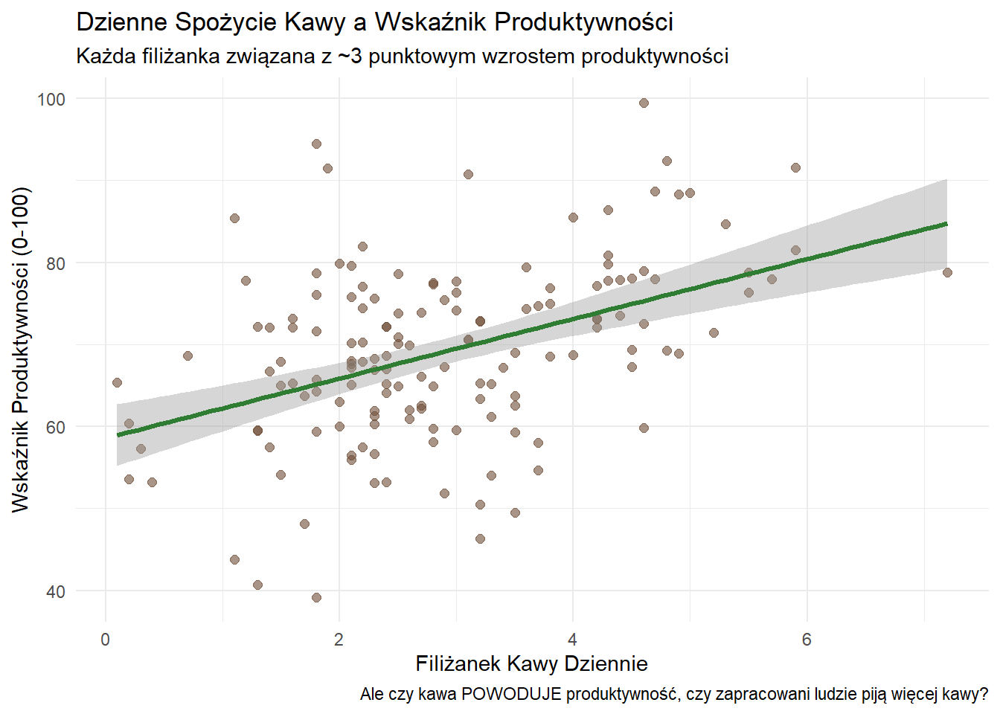
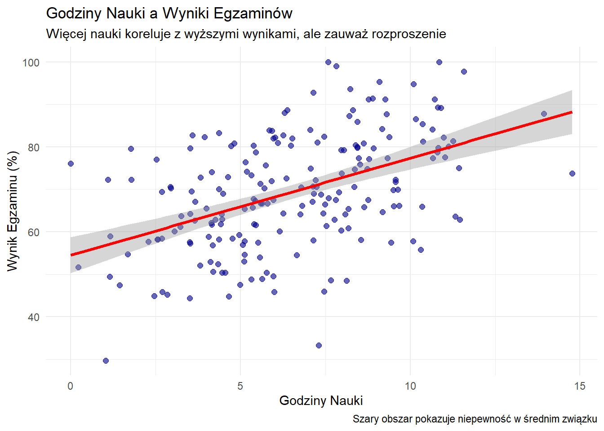
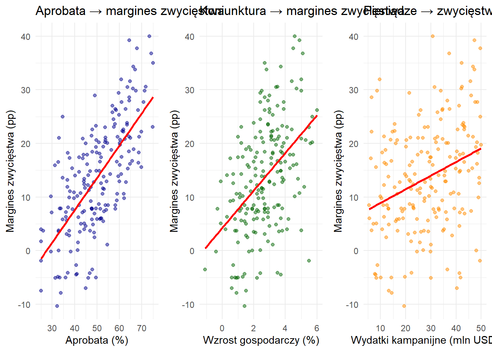

2Wprowadzenie do statystyki i analizy danych dla politologii
Zaokrąglenia i notacja naukowa w statystyce
Zasada główna: O ile nie podano inaczej, części ułamkowe liczb dziesiętnych zaokrąglaj do co najmniej 2 cyfr znaczących. W statystyce często pracujemy z długimi częściami ułamkowymi i bardzo małymi liczbami — nie zaokrąglaj nadmiernie w krokach pośrednich, zaokrąglaj na końcu obliczeń.
Zaokrąglanie w kontekście statystycznym
Część ułamkowa to cyfry po przecinku dziesiętnym. W statystyce szczególnie ważne jest zachowanie odpowiedniej precyzji:
Statystyki opisowe:
Średnia: \bar{x} = 15.847693... \rightarrow 15.85
Odchylenie standardowe: s = 2.7488... \rightarrow 2.75
Współczynnik korelacji: r = 0.78432... \rightarrow 0.78
Bardzo małe liczby (p-wartości, prawdopodobieństwa):
p = 0.000347... \rightarrow 0.00035 lub 3.5 \times 10^{-4}
Bardzo małe odchylenia standardowe: - \sigma = 0.000892 = 8.92 \times 10^{-4}
Duże liczby (rzadko w podstawowej statystyce): - N = 1\,234\,567 = 1.23 \times 10^6
Wątpliwości: Lepiej zachować dodatkową cyfrę niż zaokrąglić zbyt mocno
2.1 Czym jest statystyka?
Statystyka to nauka o uczeniu się z danych w warunkach niepewności.
Statystyka to sposób uczenia się o świecie z danych, gdy wyniki są zmienne i niepewne. Uczy, jak mądrze zbierać dane, rozpoznawać wzorce, szacować wielkości w populacji i przewidywać — zawsze podając, na ile możemy się mylić.
2.2 Trzy podstawowe funkcje statystyki
Każda analiza statystyczna realizuje przynajmniej jedną z następujących funkcji:
1. Opisywanie (description)
Podsumowujemy i wizualizujemy dane, aby zrozumieć, z czym pracujemy. Oznacza to tworzenie czytelnych wykresów, obliczanie średnich i identyfikowanie wzorców.
Przykład: Przedstawianie stóp bezrobocia przed i po wprowadzeniu programu pilotażowego Bezwarunkowego Dochodu Podstawowego (Universal Basic Income, UBI) lub pokazywanie frekwencji wyborczej w różnych grupach wiekowych.
Programy pilotażowe (pilot programs)
Program pilotażowy to ograniczona czasowo i zakresowo próba wdrożenia polityki publicznej przed jej szerokim wprowadzeniem.
W przypadku programów UBI:
Wybrani uczestnicy otrzymują regularne, bezwarunkowe wypłaty gotówkowe przez określony okres (zazwyczaj 6-24 miesięcy)
Badacze porównują rezultaty między osobami, którym zaoferowano udział w programie, a podobnymi osobami, którym nie zaoferowano takiej możliwości
Jeśli uczestnicy są wybierani losowo, różnice można interpretować jako skutki przyczynowe programu
Znaczenie programów pilotażowych: Umożliwiają decydentom testowanie rozwiązań na małą skalę przed zobowiązaniem się do kosztownych, szeroko zakrojonych programów.
2. Wnioskowanie (inference)
Wykorzystujemy dane z próby do formułowania wniosków o większych populacjach, zawsze uwzględniając niepewność naszych szacunków.
Przykład: Wykorzystanie sondażu przeprowadzonego na 1000 osób do oszacowania, jak może głosować cały kraj, wraz z podaniem marginesu błędu.
3. Przewidywanie i podejmowanie decyzji (prediction & decision-making)
Wykorzystujemy wzorce z przeszłości do prognozowania przyszłości i kierowania decyzjami, zawsze pokazując, jak pewni (lub niepewni) jesteśmy naszych przewidywań.
Przykład: Przewidywanie frekwencji wyborczej w celu określenia liczby potrzebnych lokali wyborczych lub prognozowanie skutków ekonomicznych nowej polityki.
2.3 Kluczowe pytania, na które pomaga odpowiedzieć statystyka
Czy program pilotażowy bezwarunkowego dochodu podstawowego zmienia ilość pracy wykonywanej przez ludzi?
Czy zmiany w przepisach wyborczych wpływają na to, kto bierze udział w wyborach?
Co naprawdę mówią nam sondaże opinii publicznej o wynikach wyborów?
Jak wydatki na edukację związane są z wynikami uczniów?
Czy istnieje różnica płacowa między płciami w danej dziedzinie i jak duża jest ta różnica?
Zawsze należy zacząć od opisu danych
Przed przystąpieniem do złożonych analiz należy przyjrzeć się danym. Dobra statystyka zaczyna się od dobrych wizualizacji i prostych podsumowań.
W badaniach UBI: Przedstawić stopy bezrobocia w obszarach pilotażowych w porównaniu z podobnymi obszarami niepilotażowymi w czasie. Oznaczyć moment rozpoczęcia programu. Czy coś oczywistego rzuca się w oczy?
W badaniach wyborczych: Pokazać frekwencję w kilku kolejnych wyborach. Oznaczyć moment zmiany przepisów wyborczych. Czy widoczne są wyraźne wzorce przed i po zmianie?
Dlaczego to ważne: Jeśli nie można wyjaśnić w prostych słowach, co pokazują dane, nie jest się gotowym do zastosowania zaawansowanych modeli.
Sondaże opinii publicznej: dlaczego jedna liczba to za mało
2.4 Podstawowy problem
Sondaże badają próby ludzi, a nie całą populację, dlatego wyniki naturalnie się różnią. Rezultat w stylu „Kandydat A: 52%, Kandydat B: 48%” jest niepełny bez wyrażenia niepewności wynikającej z próbkowania.
2.5 Złota zasada sondażowania
Przy około 1000 losowo wybranych respondentów 95% błąd losowego próbkowania wynosi w najgorszym przypadku mniej więcej ±3 punkty procentowe. Gdy sondaż pokazuje „52%“, prawdziwe poparcie w populacji prawdopodobnie mieści się między 49% a 55% — zakładając brak innych źródeł błędów.
2.6 Co oznacza 95% ufności?
Wyobraźmy sobie powtórzenie tego samego sondażu 100 razy z różnymi losowymi próbami po 1000 osób. Za każdym razem obliczamy przedział ±3% wokół naszego wyniku. Około 95 z tych 100 przedziałów zawierałoby prawdziwą wartość w populacji.
Pozostałe 5 przypadków to efekt losowości próbkowania—sytuacje, gdy losowa próba znacznie różni się od populacji.
2.7 Dlaczego wybieramy 95%?
Poziom ufności to kompromis między precyzją a niezawodnością:
90% ufności → węższe przedziały, ale częściej błędne
99% ufności → szersze przedziały, ale rzadziej błędne
Wyższa ufność wymaga szerszych przedziałów, co zmniejsza precyzję.
2.8 Małe różnice a niepewność
Różnica między kandydatami obarczona jest większą niepewnością niż pojedyncze odsetki. Przy n≈1000 przewaga 4 punktów procentowych może mieścić się w granicach błędu statystycznego.
2.9 Podstawy matematyczne
Dla proporcji próbowej \hat{p} z n respondentów błąd losowego próbkowania wynosi:
Wartość 1,96 to stała matematyczna zapewniająca 95% pokrycie. Wyjaśnienie:
Gdy pobieramy wiele próbek z populacji, wyniki próbkowe układają się w przewidywalny wzór wokół prawdziwej wartości. Aby objąć środkowe 95% wszystkich możliwych wyników próbkowych, statystycy ustalili, że przedział musi rozciągać się 1,96 raza typowa zmienność w każdą stronę od wyniku próbkowego.
Ten współczynnik gwarantuje, że gdyby powtórzyć proces sondażowy wiele razy, około 95% obliczonych przedziałów zawierałoby prawdziwy parametr populacyjny.
Obliczenie w najgorszym przypadku
Błąd statystyczny osiąga maksimum przy \hat{p} = 0{,}5 (podział 50-50):
Przy n = 1000: \frac{0{,}98}{\sqrt{1000}} \approx 0{,}031 = 3{,}1\%
2.10 Niezbędne informacje w sondażu
Rzetelne sondaże powinny podawać:
Daty badania kiedy przeprowadzono wywiady
Definicję próby (dorośli, wyborcy zarejestrowani, prawdopodobni wyborcy) oraz wielkość próby (n)
Sposób traktowania niezdecydowanych i kandydatów trzecich
Błąd statystyczny dla poszczególnych kandydatów
Niepewność w różnicach poparcia gdy to możliwe
2.11 Kluczowe zasady
Główna reguła: Różnice mniejsze niż błąd losowego próbkowania mogą oznaczać przypadkową zmienność próbkowania, a nie rzeczywiste różnice.
Kluczowe ograniczenie: Błąd losowego próbkowania dotyczy tylko losowej zmienności wynikającej z próbkowania. Nie uwzględnia błędów systematycznych, które często są większe i bardziej problematyczne:
Błąd braku odpowiedzi (określone grupy odmawiają udziału)
Błąd pokrycia (określone grupy nieobecne w bazach kontaktowych)
Efekty sformułowania pytań i kolejności odpowiedzi
Te błędy systematyczne mogą sprawić, że sondaże chybią prawdziwą wartość o znacznie więcej niż ±3%, a jednak są niewidoczne w podawanym błędzie próbkowania.
Zasada praktyczna: Nie należy nadinterpretować różnic mniejszych niż margines błędu—mogą to być jedynie zakłócenia (szum).
Błędy losowe vs. błędy systematyczne
Błąd losowy (random error) to nieprzewidywalna zmienność, która występuje w każdym badaniu na próbie. Im większa próba, tym mniejszy błąd losowy. To właśnie ten błąd uwzględnia margines błędu.
Błąd systematyczny (systematic error/bias) to konsekwentne przesunięcie wyników w jednym kierunku. Może wynikać z:
Nierepresentatywnej próby (np. sondaże tylko przez telefony stacjonarne)
Tendencyjnych pytań („Czy popiera Pan marnotrawienie pieniędzy podatników na program X?“)
Nieodpowiedzi określonych grup (np. młodzi ludzie rzadziej odbierają telefony)
Kluczowa różnica: Większa próba zmniejsza błąd losowy, ale nie eliminuje błędu systematycznego. Sondaż na 10 000 osób z błędem systematycznym może być mniej dokładny niż sondaż na 1000 osób bez takiego błędu.
Regresja: mierzenie średnich różnic i modelowanie związków między zmiennymi
W swojej istocie regresja odpowiada na pytanie: „Średnio o ile różnią się wyniki między grupami?”
Y_i = \alpha + \beta X_i + \varepsilon_i
Tłumaczenie na język polski:
Y_i: Zmienna wynikowa, która nas interesuje (np. liczba przepracowanych godzin tygodniowo)
X_i: Przynależność do grupy (np. X=1 dla beneficjentów UBI, X=0 dla pozostałych)
\beta: Średnia różnica w wynikach między grupami
\varepsilon_i: Wszystko inne, co wpływa na wynik
Przykład: Jeśli \beta = -2 w badaniu UBI i godzin pracy, beneficjenci UBI pracowali średnio o 2 godziny tygodniowo mniej niż osoby nieotrzymujące UBI.
Kluczowy punkt: To pokazuje związek lub korelację (association). Samo w sobie nie dowodzi, że UBI spowodowało różnicę.
Wyzwanie przyczynowości (causality)
Najtrudniejsze pytanie w statystyce: czy polityka spowodowała zmianę, czy zaszłaby ona i tak?
Co naprawdę chcemy wiedzieć
Dla tych samych ludzi w tych samych okolicznościach: co by się stało z polityką w porównaniu z sytuacją bez niej? Ponieważ nie możemy obserwować obu rzeczywistości dla tych samych osób, potrzebujemy przemyślanych porównań.
Strategie lepszego wnioskowania przyczynowego
Losowe przydzielanie (randomizacja) - złoty standard
Losowe przydzielenie niektórych osób do otrzymywania UBI, innych nie
Grupy są podobne z założenia, więc różnice prawdopodobnie wynikają z UBI
Porównanie przed/po z grupami kontrolnymi
Porównanie, jak bardzo zmienia się grupa UBI w porównaniu z tym, jak bardzo zmienia się podobna grupa bez UBI w tym samym okresie
Kontroluje inne rzeczy dziejące się w tym samym czasie
Ostre reguły lub punkty odcięcia
Porównanie osób tuż powyżej i tuż poniżej progów kwalifikowalności
Przykład: porównanie 17-latków z 18-latkami w badaniach wyborczych
Lista kontrolna twierdzeń przyczynowych
Przed uwierzeniem w jakiekolwiek twierdzenie przyczynowe należy zapytać:
Co dokładnie stanowi interwencję/politykę?
Jaki jest mierzony wynik?
Jaka jest grupa porównawcza?
Dlaczego to porównanie jest sprawiedliwe?
Czy inne wyjaśnienia mogłyby tłumaczyć różnicę?
Kluczowe wnioski
Zawsze zaczynaj od opisu: Zrozum swoje dane poprzez wizualizację i statystyki opisowe przed próbą złożonego modelowania
Akceptuj niepewność: Raportuj margines błędu i przedziały ufności (confidence intervals), nie tylko estymaty punktowe
Korelacja ≠ przyczynowość: Regresja pokazuje związki między zmiennymi; ustalenie przyczynowości wymaga przemyślanego projektu badania
Sprawiedliwe porównania mają znaczenie: Dobre wnioskowanie przyczynowe zależy od porównywania podobnych przypadków—im bliższe są grupy porównawcze, tym silniejsze są wnioski
Bądź transparentny: Dobra statystyka jasno komunikuje metody, ograniczenia i niepewność, aby pomóc innym ocenić twoją pracę
W statystyce losowość to uporządkowany sposób opisu niepewności: pojedyncze wyniki są nieprzewidywalne, natomiast w długiej serii powtórzeń ujawniają się stabilne prawidłowości (np. częstości, średnie).
Dwie perspektywy
Pojedyncza realizacja — nie potrafimy przesądzić, jak zagłosuje konkretny wyborca w danym momencie.
Zbiorowość — możemy opisać odsetek wyborców głosujących na daną partię oraz związaną z nim niepewność estymacji.
Note
Losowość epistemiczna a ontologiczna
Epistemiczna (związana z niewiedzą): wynik traktujemy jako losowy, ponieważ nie obserwujemy wszystkich determinant lub nie kontrolujemy warunków.
Przykłady:
decyzja pojedynczego wyborcy w sondażu (nie znamy pełnych motywacji),
błąd pomiaru w ankiecie (ograniczona precyzja, brak odpowiedzi),
rzut monetą modelowany jako losowy, ponieważ drobne, nieobserwowalne różnice warunków początkowych determinują wynik.
Ontologiczna (wrodzona przypadkowość zjawiska): nawet pełna wiedza nie usuwa niepewności wyniku.
Przykłady:
czas rozpadu promieniotwórczego atomu.
Dlaczego losowość ma znaczenie
Losowe próbkowanie
Ogranicza systematyczny błąd doboru, dzięki czemu próba przypomina populację docelową (w średnim ujęciu / w wartości oczekiwanej).
Umożliwia ilościowe ujęcie niepewności (np. margines błędu; pojęcie „przedziału ufności” omówimy później), pod warunkiem rzeczywiście losowego doboru i dobrego pokrycia populacji.
Losowy przydział (eksperymenty)
Przerywa związek między przydziałem a innymi czynnikami, czyniąc grupy porównywalnymi średnio (zarówno pod względem cech obserwowalnych, jak i nieobserwowalnych).
Umożliwia wiarygodne wnioskowanie przyczynowe (identyfikację średnich efektów przy standardowych założeniach).
Siła losowego próbkowania (krótki pokaz)
Załóżmy, że losujemy próbę prostą o liczebności n=1000 wyborców i obserwujemy \hat p = 0{,}55 (tj. 55% poparcia). Wówczas:
Naszą najlepszą, jednowartościową oceną odsetka w populacji p jest \hat p = 0{,}55.
Orientacyjny „95\% zakres wartości plauzybilnych” wokół \hat p można przybliżyć wzorem
\hat p \,\pm\, 2\sqrt{\frac{\hat p(1-\hat p)}{n}}
\;=\;
0{,}55 \,\pm\, 2\sqrt{\frac{0{,}55\cdot 0{,}45}{1000}}
\approx
0{,}55 \pm 0{,}031,
czyli w przybliżeniu 52\%\text{–}58\% (około \pm 3{,}1 punktu procentowego, pp).
Szerokość tego zakresu maleje wraz z liczebnością próby:
\text{szerokość} \;\propto\; \frac{1}{\sqrt{n}}.
Przykładowo, zwiększenie n z 1000 do 4000 mniej więcej zmniejsza błąd o połowę.
Note
Jak interpretować „zakres 95%”?
Gdybyśmy wielokrotnie powtarzali ten sam losowy sondaż, w przybliżeniu w 19 na 20 przypadkach obliczony zakres obejmowałby rzeczywisty odsetek w populacji.
Założenia: losowy dobór z populacji i porównywalne warunki zbierania danych. Błędy nielosowe (braki odpowiedzi, pokrycia, pomiaru) oraz złożone schematy (warstwowanie, klastrowanie, wagi) mogą powodować, że rzeczywista niepewność będzie większa niż wynika to z powyższego przybliżenia.
2.13 Podstawa: Prawo wielkich liczb
Prawo wielkich liczb (Law of Large Numbers, LLN) to jedna z najważniejszych zasad statystyki. Wyjaśnia, dlaczego możemy wyciągać rzetelne wnioski z prób, nawet gdy poszczególne wyniki są nieprzewidywalne.
Podstawowa idea: Gdy powtarzamy losowy proces wiele razy, średni wynik zbliża się coraz bardziej do tego, czego oczekiwalibyśmy teoretycznie.
Wizualizacja Prawa wielkich liczb: rzuty monetą
Zobaczmy to w działaniu na przykładzie rzutów monetą. Uczciwa moneta ma 50% szansy na wypadnięcie orła, ale poszczególne rzuty są nieprzewidywalne.
# Symulacja rzutów monetą i pokazanie zbieżnościset.seed(42)n_flips <-1000flips <-rbinom(n_flips, 1, 0.5) # 1 = orzeł, 0 = reszka# Obliczanie skumulowanej proporcji orłówcumulative_prop <-cumsum(flips) /seq_along(flips)# Utworzenie ramki danych do wizualizacjilln_data <-data.frame(flip_number =1:n_flips,cumulative_proportion = cumulative_prop)# Wykres zbieżnościggplot(lln_data, aes(x = flip_number, y = cumulative_proportion)) +geom_line(color ="steelblue", alpha =0.7) +geom_hline(yintercept =0.5, color ="red", linetype ="dashed", size =1) +geom_hline(yintercept =c(0.45, 0.55), color ="red", linetype ="dotted", alpha =0.7) +labs(title ="Prawo wielkich liczb: Proporcje rzutów monetą zbiegają do 0,5",x ="Liczba rzutów monetą",y ="Skumulowana proporcja orłów",caption ="Czerwona linia przerywana = prawdziwe prawdopodobieństwo (0,5)\nLinie kropkowane = zakres ±5%" ) +scale_y_continuous(limits =c(0.3, 0.7), breaks =seq(0.3, 0.7, 0.1)) +theme_minimal()
Co to pokazuje:
Początkowe rzuty wykazują duże wahania (pierwsze 10 rzutów może dać 70% lub 30% orłów)
W miarę dodawania kolejnych rzutów, proporcja stabilizuje się wokół 50%
„Szum” poszczególnych wyników się uśrednia w czasie
Sformułowanie matematyczne
Niech A oznacza zdarzenie nas interesujące (np. „orzeł w rzucie monetą”, „głos na partię X”, „suma kostek równa 7”). Jeśli P(A) = p i obserwujemy nniezależnych prób z tym samym rozkładem (i.i.d.), to częstość próbkowa zdarzenia A:
Przykład z kostkami: Zdarzenie „suma = 7” przy dwóch kostkach ma prawdopodobieństwo 6/36 ≈ 16,7\%, podczas gdy „suma = 4” ma 3/36 ≈ 8,3\%. Przy wielu rzutach suma 7 pojawia się około dwa razy częściej niż suma 4.
Sondaże wyborcze: Jeśli poparcie populacyjne dla partii wynosi p, to przy losowym doborze próby o wielkości n obserwowana częstość \hat{p}_n będzie zbliżać się do p w miarę wzrostu n (zakładając losowy dobór i niezależność prób).
Kontrola jakości: Jeśli 2% produktów jest wadliwych, to w dużych partiach około 2% zostanie uznanych za wadliwe (zakładając niezależną produkcję).
Dlaczego to ma znaczenie dla statystyki
Wniosek: Losowość stanowi podstawę wnioskowania statystycznego, przekształcając niepewność poszczególnych wyników w przewidywalne rozkłady dla estymatorów. Prawo wielkich liczb gwarantuje, że „szum” poszczególnych wyników się uśrednia, pozwalając nam:
Przewidywać długookresowe częstości
Kwantyfikować niepewność (marginesy błędu)
Wyciągać rzetelne wnioski z prób
Formułować probabilistyczne stwierdzenia o populacjach
Ta zasada działa w sondażach, eksperymentach, a nawet w zjawiskach kwantowych (w interpretacji częstościowej).
2.14 Rozumienie różnych typów nieprzewidywalności
Nie wszystkie rodzaje niepewności są takie same. Zrozumienie różnych źródeł nieprzewidywalności pomaga w wyborze odpowiednich metod statystycznych i prawidłowej interpretacji wyników.
Pojęcie
Czym jest?
Źródło nieprzewidywalności
Przykład
Losowość (randomness)
Poszczególne wyniki są niepewne, ale rozkład prawdopodobieństwa jest znany lub modelowany.
Fluktuacje między realizacjami; brak informacji o konkretnym wyniku.
Rzut kostką, rzut monetą, próba sondażowa
Chaos
Dynamika deterministycznabardzo wrażliwa na warunki początkowe (efekt motyla).
Niewielkie różnice początkowe szybko narastają → duże rozbieżności trajektorii.
Miara niepewności/rozproszenia (teorioinformacyjna lub termodynamiczna).
Większa gdy wyniki są bardziej równomiernie rozłożone (mniej informacji predykcyjnej).
Entropia Shannona w kompresji danych
„Przypadkowość” (potoczne)
Odczuwany brak porządku bez wyraźnego modelu; mieszanka mechanizmów.
Brak uporządkowanego opisu lub stabilnych reguł; nakładające się procesy.
Wzorce ruchu, trendy w mediach społecznościowych
Losowość kwantowa (quantum randomness)
Pojedynczy wynik nie jest zdeterminowany; tylko rozkład jest określony (reguła Borna).
Fundamentalna (ontologiczna) nieokreśloność poszczególnych pomiarów.
Pomiar spinu elektronu, polaryzacja fotonu
Kluczowe rozróżnienia dla praktyki statystycznej
Chaos deterministyczny ≠ losowość statystyczna: System chaotyczny jest w pełni deterministyczny, ale praktycznie nieprzewidywalny z powodu ekstremalnej wrażliwości na warunki początkowe. Losowość statystyczna modeluje natomiast niepewność poprzez rozkłady prawdopodobieństwa, gdzie poszczególne wyniki są rzeczywiście niepewne.
Dlaczego to ważne: W statystyce zazwyczaj modelujemy zjawiska jako procesy losowe, zakładając, że możemy określić rozkłady prawdopodobieństwa, nawet gdy poszczególne wyniki są nieprzewidywalne. To założenie stanowi podstawę większości wnioskowań statystycznych.
Mechanika kwantowa i fundamentalna losowość
W interpretacji kopenhaskiej losowość jest fundamentalna (ontologiczna): pojedynczy wynik nie może być przewidziany, ale rozkład prawdopodobieństwa jest dany przez regułę Borna:
P(\text{wynik}) \propto \lvert \psi \rvert^{2}
To reprezentuje prawdziwą losowość na najbardziej podstawowym poziomie natury, nie tylko naszą ignorancję czynników determinujących.
2.15 Wnioskowanie statystyczne: od prób do populacji
Note
Podstawowa zasada: Statystyka nie eliminuje niepewności—pomaga nam ją mierzyć, zarządzać nią i skutecznie komunikować.
Główne wyzwanie
Pytanie badawcze: Jaki odsetek studentów popiera utrzymanie biblioteki otwartej 24/7?
Wyzwanie:
Populacja: 20 000 studentów na uniwersytecie
Praktyczne ograniczenie: możemy przebadać tylko 100 studentów
Problem: różne próby dadzą różne wyniki
Bez myślenia statystycznego: „60 ze 100 studentów powiedziało tak, więc dokładnie 60% popiera ten pomysł.”
Z myśleniem statystycznym: „Szacujemy 60% poparcia z marginesem błędu ±10%. Możemy być w rozsądnym stopniu pewni, że prawdziwe poparcie mieści się między 50% a 70%.”
Różnica polega na uznaniu i skwantyfikowaniu niepewności zamiast udawania, że jej nie ma.
Przestroga: gdy big data zawodzi
Przykład historyczny: sondaż Literary Digest z 1936 roku
Literary Digest przeprowadził jeden z największych sondaży w historii z 2,4 milionami odpowiedzi, przewidując, że Alf Landon pokona Franklina D. Roosevelta w wyborach prezydenckich 1936 roku. Pomimo ogromnej wielkości próby:
Prawdopodobni respondenci: osoby z silnymi anty-rooseveltowskimi poglądami
Nierespondenci: wielu zwolenników Roosevelta nie czuło potrzeby uczestniczenia
Kluczowe lekcje:
Duża obciążona próba jest gorsza niż mała reprezentatywna próba
Błędy standardowe mierzą tylko błąd losowy, nie błąd systematyczny
Wielkość próby nie może naprawić fundamentalnych problemów z doborem
Reprezentatywny dobór ma większe znaczenie niż wielkość próby
Ta katastrofa doprowadziła do znaczących ulepszeń w metodologii sondażowej, włączając rozwój doboru probabilistycznego i śledzenia wskaźników odpowiedzi.
Od błędu do zrozumienia: współczesne sondaże
Dzisiejsze sondaże, choć znacznie mniejsze od 2,4 milionów odpowiedzi Literary Digest, są znacznie dokładniejsze, ponieważ koncentrują się na:
Reprezentatywnym doborze: Używanie metod opartych na prawdopodobieństwie, aby zapewnić, że wszystkie grupy mają znane szanse selekcji
Wykrywaniu i korygowaniu błędów: Monitorowanie wskaźników odpowiedzi w różnych grupach demograficznych i korygowanie znanych błędów
Kwantyfikacji niepewności: Raportowanie marginesów błędu, które uczciwie komunikują ograniczenia tego, co wiemy
Przykład: Współczesny sondaż na 1000 losowo wybranych wyborców z 3% marginesem błędu jest znacznie bardziej rzetelny niż masowy, ale obciążony sondaż Literary Digest.
Sposób myślenia statystycznego
Myślenie statystyczne przekształca sposób, w jaki podchodzimy do niepewności:
Wcześniej: „Ta próba daje nam odpowiedź” Teraz: „Ta próba daje nam dowody ze znanymi ograniczeniami”
Wcześniej: „Większe próby są zawsze lepsze” Teraz: „Reprezentatywne próby ze skwantyfikowaną niepewnością są lepsze”
Wcześniej: „Albo coś wiemy, albo nie wiemy” Teraz: „Wiemy rzeczy z różnym stopniem pewności”
To podejście jest kluczowe nie tylko dla prowadzenia badań, ale także dla bycia świadomym konsumentem statystyk w wiadomościach, debatach politycznych i codziennych decyzjach.
Pytanie badawcze: Jaki odsetek studentów popiera całodobowe (24/7) otwarcie biblioteki?
Wyzwanie:
Populacja: 20 000 studentów uczelni
Ograniczenie praktyczne: można przepytać jedynie 100 osób
Problem: różne próby dadzą różne wyniki
Bez myślenia statystycznego: „60 ze 100 osób odpowiedziało ‘tak’, zatem poparcie wynosi 60%.”
Z myśleniem statystycznym: „Szacujemy poparcie na 60% z marginesem błędu ±10%. Z rozsądnym poziomem ufności prawdziwy odsetek leży między 50% a 70%.”
Gdy 60 ze 100 ankietowanych studentów popiera daną propozycję, \hat{p} = 0{,}60 stanowi oszacowanie punktowe — najlepszą pojedynczą aproksymację parametru populacyjnego na podstawie naszej próby.
2.18 Wielkość próby a precyzja
Wielkość próby bezpośrednio wpływa na precyzję oszacowania. Dla wyników binarnych bliskich 50% przy prostym losowaniu:
Wielkość próby
Błąd próbkowania (95%)
Interpretacja
n = 100
± 10%
Tylko ogólny kierunek
n = 400
± 5%
Ogólne tendencje
n = 1000
± 3%
Precyzja użyteczna praktycznie
n = 2500
± 2%
Wysoka precyzja
n = 10000
± 1%
Bardzo wysoka precyzja
Kluczowa obserwacja: Aby zmniejszyć błąd próbkowania o połowę, potrzeba cztery razy większej próby (prawo malejących przychodów).
Podstawa matematyczna: Ponieważ błąd próbkowania jest proporcjonalny do \frac{1}{\sqrt{n}}, poprawa precyzji wymaga kwadratowego wzrostu wielkości próby.
2.19 Rozumienie przedziałów ufności
Co oznacza 95% ufności
Wyobraź sobie powtórzenie badania 100 razy z różnymi losowymi próbami. Każde badanie da przedział ufności wokół swojego oszacowania punktowego. Około 95 z tych 100 przedziałów zawierałoby prawdziwy parametr populacyjny.
95% opisuje niezawodność metody, a nie prawdopodobieństwo dla konkretnego przedziału.
Powszechna błędna interpretacja
Nieprawidłowo: „Jest 95% szansy, że prawdziwa wartość mieści się między 57% a 63%”
Prawidłowo: „Wielokrotne zastosowanie tej metody sprawia, że 95% takich przedziałów zawiera prawdziwą wartość”
Kompromis między ufnością a precyzją
Wyższa ufność wymaga szerszych przedziałów:
90% ufności: ±2% (węższy, mniej pewny)
95% ufności: ±3% (standardowy wybór)
99% ufności: ±5% (szerszy, bardziej pewny)
2.20 Przykład praktyczny: Ankieta o godzinach biblioteki
Pytanie badawcze: Jaki odsetek studentów popiera wydłużenie godzin otwarcia biblioteki?
Trzy wielkości próby, ten sam wynik (60% poparcia)
Mała próba (n = 100)
95% PU: 50% do 70% (±10%)
Interpretacja: Ogólny kierunek jest jasny, ale zbyt nieprecyzyjny dla decyzji strategicznych
Średnia próba (n = 400)
95% PU: 55% do 65% (±5%)
Interpretacja: Wystarczające do zrozumienia ogólnego poziomu poparcia
Zasada praktyczna: Dla proporcji bliskich 50%, błąd próbkowania ≈ \frac{1}{\sqrt{n}}
Współczynnik 1,96
Dla 95% przedziałów ufności mnożymy błąd standardowy przez 1,96. Ta wartość zapewnia, że w przypadku wielokrotnego powtórzenia procesu około 95% obliczonych przedziałów będzie zawierać prawdziwy parametr populacyjny.
2.24 Podsumowanie
Błąd próbkowania kwantyfikuje niepewność wynikającą z badania próby zamiast całej populacji. Błąd standardowy mierzy typową zmienność próbkową. 95% przedziały ufności wykorzystują metody, które wychwytują prawdziwy parametr w 95% przypadków przy wielokrotnym zastosowaniu.
Kluczowa obserwacja: Te miary pomagają odróżnić znaczące różnice od szumu próbkowego, ale pamiętaj, że dotyczą tylko jednego źródła niepewności — losowej zmienności próbkowania.
2.25 Wizualizacja zmienności próbkowania
Oto polska wersja Twojego przykładu — z poprawionym liczeniem marginesu błędu, wizualnym pokazaniem pokrycia (czy przedział obejmuje prawdę), bez żargonu o rozkładach.
library(ggplot2)set.seed(42)# Parametryn_polls <-20n_people <-100true_support <-0.50# Symulacja niezależnych sondaży (liczba "za" -> odsetek)support <-rbinom(n_polls, n_people, true_support) / n_people# Błąd standardowy dla odsetka (oszacowanie "plug-in" z danego sondażu)se <-sqrt(support * (1- support) / n_people)# „95%” margines błędu ≈ 2 × SE (praktyczna reguła kciuka, bez żargonu)moe <-2* se# Ograniczenie przedziałów do [0, 1], żeby nie wychodziły poza możliwy zakreslower <-pmax(0, support - moe)upper <-pmin(1, support + moe)# Czy przedział obejmuje prawdziwą wartość?covers <- (lower <= true_support) & (upper >= true_support)n_cover <-sum(covers)n_miss <- n_polls - n_coverresults <-data.frame(poll =seq_len(n_polls), support, se, moe, lower, upper, covers)# Wykresggplot(results, aes(x = poll, y = support, color = covers)) +geom_errorbar(aes(ymin = lower, ymax = upper), width =0.3, alpha =0.8) +geom_point(size =3) +geom_hline(yintercept = true_support, linetype ="dashed") +scale_color_manual(values =c("TRUE"="forestgreen", "FALSE"="darkorange"),labels =c("TRUE"="Obejmuje prawdę", "FALSE"="Mija się z prawdą"),name =NULL ) +coord_cartesian(ylim =c(0, 1)) +labs(title ="Zmienność wyników w 20 niezależnych sondażach",subtitle =paste0("Każdy sondaż obejmuje ", n_people, " osób. Prawdziwa wartość = ", scales::percent(true_support),". Przedziały obejmujące prawdę: ", n_cover, "/", n_polls," (", round(100* n_cover / n_polls), "%)." ),x ="Numer sondażu",y ="Oszacowany odsetek" ) +theme_minimal(base_size =13) +theme(legend.position ="top")
Kluczowa obserwacja: Każda próba daje inny wynik, ale większość oszacowań i ich przedziałów skupia się wokół prawdziwej wartości; kilka „pudłuje” wyłącznie z powodu losowości doboru próby.
Nieprzewidywalne „górki i dołki” wynikające z przypadku (np. którymi osobami losowo dysponujemy, szum dnia codziennego).
Daje się kwantyfikować teorią statystyki (np. błąd standardowy — standard error, SE; przedział ufności — confidence interval, CI; margines błędu — margin of error, MoE)
Maleje wraz ze wzrostem liczebności próby n
Ograniczamy go zwiększając n, stosując efektywne estymatory i dobre schematy zbierania danych
2) Błąd systematyczny (bias; systematic error)
Trwałe „przesunięcie” wyniku od prawdy, spowodowane projektem badania lub pomiarem.
Nie znika po zwiększeniu n
Często trudny do bezpośredniego wyliczenia prostymi wzorami
Ograniczamy go przez lepszy projekt, lepszy pomiar i rzetelne zbieranie danych
Warning
Kluczowa myśl: Duża, ale obciążona (biased) próba daje dokładnie błędny wynik. Zwiększaj n, aby zmniejszyć błąd losowy; poprawiaj projekt/pomiar, aby zmniejszyć bias.
Wariancja (variance): jak bardzo wynik „skakałby”, gdybyśmy wiele razy powtarzali badanie (błąd losowy).
Bias: jak daleko średnie oszacowanie jest od prawdy (błąd systematyczny).
Cel: utrzymywać oba składniki na niskim poziomie. Więcej danych zmniejsza wariancję; lepszy projekt zmniejsza bias.
Tip
W predykcji (prediction) drobny bias bywa akceptowalny, jeśli wyraźnie obniża wariancję i przez to MSE (mean squared error). W wnioskowaniu przyczynowym (causal inference) niekontrolowany bias jest zwykle nieakceptowalny.
2.29 Częste źródła biasu (w wielu typach badań)
Bias selekcji (selection bias) Dane/próba nie reprezentują grupy docelowej. Jak ograniczać: klarownie zdefiniuj populację docelową; gdy to możliwe, używaj losowania probabilistycznego; rozważ wiarygodne ważenie (reweighting).
Bias braku odpowiedzi/utraty (nonresponse/attrition bias) Niektóre typy uczestników częściej nie odpowiadają lub wypadają z badania. Jak ograniczać: zmniejsz obciążenie (krótsze narzędzia), przypomnienia, drobne zachęty; raportuj skalę i wzorce braków.
Bias pomiaru (measurement bias) Systematyczne zniekształcenie w pomiarach (np. źle skalibrowane urządzenie, sugerujące pytanie, stała błędna kategoryzacja). Jak ograniczać: kalibracja, pilotaż i neutralizacja pytań, używanie zwalidowanych skal, „zaślepienie” oceniających (blinding), gdy możliwe.
Bias projektu/identyfikacji (design/identification bias) Problem z interpretacją przyczynową: konfuzja (confounding), błędne warunkowanie (np. kontrola mediatora), współzależność przyczyn i skutków (endogeneity). Jak ograniczać: randomizacja, stratyfikacja/blokowanie, plany analizy przed zbiorem danych (pre-analysis), narzędzia projektowe (np. wykresy DAG), odpowiednie metody (IV, DiD, RDD) przy spełnionych założeniach.
Bias specyfikacji/modelu (model/specification bias) Zła forma funkcji, brak ważnych interakcji, ekstrapolacja poza wsparty zakres danych. Jak ograniczać: diagnostyka relacji, rozsądne alternatywne specyfikacje, sprawdzanie predykcji na nowych danych.
Przeuczenie i „wyciek” danych (overfitting & data leakage) Znakomity wynik „na danych treningowych”, który nie trzyma się nowych danych; niezamierzone „dzielenie się” informacją między zbiorem treningowym i testowym. Jak ograniczać: prawdziwy zestaw testowy, walidacja krzyżowa (cross-validation), szczelny pipeline przetwarzania.
Błędy przetwarzania (processing/pipeline errors) Błędy kodowania, łączenia tabel, jednostek miary. Jak ograniczać: odtwarzalne skrypty, testy i audyty, kontrola wersji.
2.30 Jak czytać „precyzję” (bez dodatkowych wzorów)
Błąd standardowy (standard error, SE): średnia „losowa szorstkość” oszacowania; mniejszy SE = większa precyzja.
Przedział ufności (confidence interval, CI): zakres, który z ustalonym prawdopodobieństwem ma obejmować prawdziwą wartość (np. 95%).
Margines błędu (margin of error, MoE): wygodny skrót szerokości niepewności w prostych sytuacjach.
Note
Zwiększanie nzwęża SE, CI i MoE. Nie usuwa jednak biasu.
2.31 Testy hipotez: dwa typy pomyłek
Błąd I rodzaju (Type I error; „fałszywie pozytywny”): ogłaszamy efekt, którego nie ma. Ryzyko kontroluje poziom istotności (significance level; często 5%).
Błąd II rodzaju (Type II error; „fałszywie negatywny”): nie wykrywamy istniejącego efektu. Moc (power) to szansa wykrycia rzeczywistego efektu (im większa, tym lepiej).
Wiele testów naraz (multiple comparisons): im więcej testów, tym większe ryzyko fałszywych alarmów. Warto rozważyć kontrolę odsetka fałszywych odkryć (false discovery rate, FDR).
2.32 Dobre praktyki „w pigułce”
Przed zbiorem danych: zdefiniuj populację docelową, wyniki i porównania; przetestuj narzędzia pomiarowe.
W trakcie zbierania: minimalizuj obciążenie respondentów, używaj neutralnych sformułowań, notuj skalę/strukturę braków odpowiedzi.
W analizie: proste diagnostyki, rozsądne alternatywy specyfikacji, ochrona przed przeuczeniem i „wyciekiem”.
W raporcie: opisz pochodzenie danych, brakujące dane, niepewność (SE/CI/MoE) i prawdopodobny kierunek biasu.
2.33 Lista kontrolna w minutę
Bias: czy grozi selekcja, zły pomiar lub błąd projektu (np. kontrola mediatora)?
Wariancja: czy liczebność próby jest rozsądna względem celu?
Model: czy prostszy/inny model mógłby zmienić wnioski?
Walidacja: czy działa na nowych lub odłożonych danych?
Transparentność: czy jasno podano założenia, ograniczenia i możliwy kierunek biasu?
2.34 Słowniczek skrótów (PL z angielskimi odpowiednikami)
SE — błąd standardowy (standard error): średni poziom losowej zmienności oszacowania.
CI — przedział ufności (confidence interval): zakres mający obejmować prawdę przy zadanym poziomie ufności.
MoE — margines błędu (margin of error): prosta miara szerokości niepewności w części zastosowań.
FDR — odsetek fałszywych odkryć (false discovery rate): oczekiwany udział fałszywych pozytywów wśród „odkryć”.
Moc (power): prawdopodobieństwo wykrycia rzeczywistego efektu przy zadanym poziomie istotności.
Poziom istotności (significance level, \alpha): akceptowany poziom ryzyka błędu I rodzaju.
Warning
Critical Point: A large biased sample provides a precisely wrong answer. A small unbiased sample is preferable to a large biased one.
A narrow interval around a biased estimator is precisely wrong. Address bias with better design; address random error with larger n.
2.35 Populacja, próba i superpopulacja: podstawy wnioskowania statystycznego
W naukach politycznych i ekonomii badacze dążą do zrozumienia całych populacji—kompletnych zbiorów jednostek, które chcą badać. Jednak badanie całych populacji jest zazwyczaj niemożliwe, niepraktyczne lub niepotrzebne. Metody statystyczne umożliwiają nam uczenie się o populacjach poprzez starannie dobrane próby.
2.36 Definiowanie populacji w politologii i ekonomii
Populacja w badaniach nauk społecznych obejmuje różne typy jednostek analitycznych, w zależności od pytania badawczego:
Populacje na poziomie indywidualnym
Populacja: Wszyscy 240 milionów dorosłych Amerykanów Próba: 1000 losowo wybranych dorosłych w badaniu ogólnokrajowym Pytanie badawcze: Jaki procent popiera powszechną opiekę zdrowotną?
Populacja: Wszyscy zarejestrowani wyborcy w Kanadzie Próba: 2500 losowo wybranych zarejestrowanych wyborców Pytanie badawcze: Jak postrzeganie sytuacji ekonomicznej wpływa na zachowania wyborcze?
Analiza na poziomie krajów
Populacja: Wszystkie 195 suwerennych państw świata Próba: 50 krajów reprezentujących różne regiony i poziomy rozwoju Pytanie badawcze: Czy demokratyczne rządzenie koreluje ze stopami wzrostu ekonomicznego?
Jednostki samorządowe
Populacja: Wszystkie 3143 hrabstwa w Stanach Zjednoczonych Próba: 200 losowo wybranych hrabstw o zróżnicowanych profilach demograficznych Pytanie badawcze: Jak lokalne bezrobocie wpływa na wskaźniki przestępczości?
Populacja: Wszystkie gminy w Polsce Próba: 250 losowo wybranych gmin Pytanie badawcze: Jakie czynniki przewidują efektywność samorządu lokalnego?
Analiza organizacji
Populacja: Wszystkie NGO zarejestrowane w Organizacji Narodów Zjednoczonych Próba: 100 NGO działających w różnych obszarach polityki Pytanie badawcze: Jakie cechy organizacyjne przewidują efektywność NGO?
Populacje temporalne i oparte na zdarzeniach
Populacja: Wszystkie wybory krajowe przeprowadzone w europejskich demokracjach od 1945 roku Próba: 300 wyborów obejmujących różne kraje i dekady Pytanie badawcze: Jak warunki ekonomiczne wpływają na udział głosów partii rządzącej?
Populacja: Wszystkie projekty ustaw wprowadzone do Kongresu USA w latach 2000–2020 Próba: 500 losowo wybranych projektów ustaw z różnych obszarów polityki Pytanie badawcze: Jakie czynniki przewidują, czy projekt ustawy zostanie przyjęty?
2.37 Logika wnioskowania statystycznego: od próby do populacji
Próba reprezentuje podzbiór populacji, który badacze rzeczywiście obserwują i mierzą. Podstawową ideą wnioskowania statystycznego jest to, że możemy uczyć się o charakterystykach populacji poprzez badanie prób—pod warunkiem, że dobieramy je starannie.
Proces wnioskowania przebiega zgodnie z tą logiczną strukturą:
Przykład: Jeśli 52% respondentów sondażu popiera Kandydata A (\hat{p} = 0,52), co możemy wnioskować o poziomach poparcia w całej populacji wyborców (\pi)?
Kluczowa zasada: Losowy dobór zapewnia, że każda jednostka w populacji ma równe prawdopodobieństwo włączenia, zapobiegając w ten sposób systematycznemu błędowi w składzie próby.
Podstawowa terminologia
Parametr populacji: Numeryczna charakterystyka całej populacji (np. średnia populacji \mu, proporcja populacji \pi). Zazwyczaj nieznana i stanowi to, co chcemy oszacować.
Statystyka próbkowa: Wartość liczbowa obliczona na podstawie danych próbkowych (np. średnia próbkowa \bar{x}, proporcja próbkowa \hat{p}). To, co rzeczywiście obserwujemy i obliczamy.
Estymator: Metoda lub formuła używana do przybliżenia parametru populacji na podstawie danych próbkowych (np. „oblicz średnią próbkową”).
Oszacowanie (estimate): Konkretny wynik numeryczny uzyskany przez zastosowanie estymatora do konkretnej próby.
2.38 Metody doboru prób i wyzwanie reprezentatywności
Jakość wnioskowania statystycznego zależy w decydującym stopniu od sposobu, w jaki dobieramy naszą próbę. Różne podejścia do doboru prób niosą różne zalety i ograniczenia:
1. Dobór wygody (convenience sampling)
Metoda: Badanie łatwo dostępnych jednostek (np. studentów na zajęciach z nauk politycznych) Ograniczenie: Systematyczna niedoreprezentacja podgrup populacji Przykład problemu: Studenci zazwyczaj są młodsi, bardziej wykształceni i bardziej liberalni niż ogólny elektorat
2. Dobór ochotniczy (voluntary response sampling)
Metoda: Ankiety z otwartym uczestnictwem (np. sondaże online na stronach informacyjnych) Ograniczenie: Selection bias—uczestnicy wybierają, czy odpowiadać Przykład problemu: Osoby z silnymi opiniami uczestniczą nieproporcjonalnie, zniekształcając wyniki
3. Prosty dobór losowy (simple random sampling)
Metoda: Każda jednostka populacji ma równe prawdopodobieństwo selekcji Zaleta: Najlepsze teoretyczne podstawy dla reprezentatywnych prób Przykład: Losowo wybrane numery telefonów z kompleksowych baz danych obejmujących wszystkie grupy demograficzne
4. Dobór warstwowy losowy (stratified random sampling)
Metoda: Podział populacji na znaczące podgrupy, następnie losowy dobór w ramach każdej warstwy Zaleta: Gwarantuje reprezentację kluczowych kategorii demograficznych lub geograficznych Przykład: Badanie krajowe zapewniające proporcjonalną reprezentację z każdego województwa lub grupy dochodowej
5. Dobór skupień (cluster sampling)
Metoda: Losowy wybór grup (skupień), następnie badanie wszystkich jednostek w wybranych skupieniach Zaleta: Koszt-efektywny dla populacji rozproszonych geograficznie Przykład: Losowy wybór 50 miast w kraju, następnie kompleksowe badanie mieszkańców tych miast
2.39 Zrozumienie parametrów, statystyk i oszacowań
Rozróżnienie parametr-statystyka
Wnioskowanie statystyczne opiera się na fundamentalnym rozróżnieniu między tym, co obserwujemy, a tym, co chcemy wiedzieć:
Parametry populacji
Charakterystyki numeryczne opisujące całą populację
Przykład: Procent 1000 respondentów sondażu wyrażających poparcie dla powszechnej opieki zdrowotnej
Estymatory i oszacowania
Estymator definiuje metodę obliczeniową dla przybliżenia parametru populacji. Oszacowanie (estimate) reprezentuje konkretny wynik numeryczny uzyskany przez zastosowanie tej metody do konkretnych danych próbkowych.
Przykład estymatora: Formuła średniej próbkowej \bar{x} = \frac{\sum_{i=1}^n x_i}{n} Przykład oszacowania: \bar{x} = 6,3 lat (rzeczywista obliczona wartość z naszych danych o edukacji)
Estimand: co dokładnie staramy się oszacować?
Estimand to konkretna wielkość, którą chcemy oszacować—to, na co celujemy w naszej analizie statystycznej. Chociaż często jest to parametr populacji, estimandy mogą być bardziej złożone.
Przykłady różnych estimandów:
Prosty estimand parametryczny: Średni dochód w populacji (\mu) Estimand porównawczy: Różnica w średnich dochodach między dwiema grupami (\mu_1 - \mu_2) Estimand przyczynowy: Średni efekt leczenia programu szkolenia zawodowego na zarobki Estimand warunkowy: Oczekiwana frekwencja wyborcza przy określonych warunkach pogodowych
Kompletna struktura pojęciowa
Zrozumienie wnioskowania statystycznego wymaga rozróżnienia między tymi powiązanymi, ale odrębnymi pojęciami:
Parametr populacji: Prawdziwa charakterystyka populacji (np. \mu)
Estimand: Konkretna wielkość, którą chcemy oszacować (często, ale nie zawsze, parametr)
Estymator: Metoda obliczania naszego oszacowania (np. średnia próbkowa)
Oszacowanie: Rzeczywista liczba, którą obliczamy z naszych danych
Przykład w kontekście:
Parametr: Prawdziwa średnia frekwencja wyborcza we wszystkich wyborach (\mu)
Estimand: Oczekiwana różnica frekwencji między deszczowymi a słonecznymi dniami wyborczymi (\mu_{\text{deszczowe}} - \mu_{\text{słoneczne}})
Estymator: Różnica między średnimi próbkowymi z deszczowych i słonecznych wyborów
Oszacowanie: 3,2 punktu procentowego niższa frekwencja w deszczowe dni
Ta struktura pomaga wyjaśnić dokładnie, na jakie pytanie odpowiadamy, i zapewnia, że nasze metody są zgodne z naszymi celami badawczymi.
2.40 Zrozumienie zmienności próbkowej poprzez symulację
Nieodłączna niepewność w wnioskowaniu statystycznym wynika z tego, że różne próby z tej samej populacji dają różne wyniki. Możemy zilustrować tę koncepcję poprzez symulację:
# Symulacja zmienności próbkowej w sondażachset.seed(123)# Załóżmy, że prawdziwe poparcie w populacji to 60%p_true <-0.60n_per_poll <-1000# Wielkość próby na sondażn_polls <-2000# Liczba symulowanych sondaży# Symulujemy 2000 różnych sondaży, każdy z 1000 respondentamipoll_results <-rbinom(n_polls, size = n_per_poll, prob = p_true) / n_per_poll# Obliczamy zmienność próbkowąsampling_se <-sd(poll_results)poll_range <-quantile(poll_results, c(0.025, 0.975))# Wizualizujemy rozkład wyników sondażupoll_data <-data.frame(poll_number =1:n_polls,support_percentage = poll_results *100)ggplot(poll_data, aes(x = support_percentage)) +geom_histogram(bins =50, alpha =0.7, fill ="steelblue") +geom_vline(xintercept = p_true *100, color ="red", linetype ="dashed", size =1) +geom_vline(xintercept = poll_range *100, color ="red", linetype ="dotted") +labs(title ="Rozkład wyników sondaży z 2000 symulowanych sondaży",subtitle ="Każdy sondaż bada 1000 osób z populacji z 60% prawdziwym poparciem",x ="Obserwowany procent poparcia w sondażu (%)",y ="Liczba sondaży",caption =paste("Błąd standardowy:", round(sampling_se *100, 1), "%\n95% sondaży mieści się między", round(poll_range[1] *100, 1), "% a", round(poll_range[2] *100, 1), "%") ) +theme_minimal()
cat("95% wyników sondaży mieści się między:", round(poll_range[1] *100, 1), "% a", round(poll_range[2] *100, 1), "%")
95% wyników sondaży mieści się między: 57 % a 62.9 %
Kluczowa obserwacja: Nawet gdy charakterystyki populacji pozostają stałe, powtarzane próbkowanie daje różne wyniki. Ta zmienność próbkowa stanowi główne źródło niepewności, którą wnioskowanie statystyczne musi adresować i kwantyfikować.
2.41 Poza prostymi modelami populacja-próba: superpopulacje
Gdy obserwujemy kompletne populacje
Badacze czasami mają dostęp do całych populacji w konkretnych kontekstach:
Dane ze spisu narodowego obejmujące wszystkich mieszkańców
Kompletne rejestry wszystkich transakcji giełdowych w 2024 roku
Kompleksowe dane o przyjęciach do szpitala w 2023 roku
Wszystkie gminy w Polsce z ich charakterystykami w 2024 roku
Pytanie: Jeśli możemy obliczyć dokładne parametry populacji dla 2024 roku, po co dyskutować niepewność?
Odpowiedź: Zazwyczaj staramy się zrozumieć podstawowe procesy, nie tylko opisać pojedyncze okresy.
Koncepcja superpopulacji
Superpopulacja lub proces generujący dane (Data Generating Process, DGP) reprezentuje konceptualny mechanizm, który produkuje obserwowane dane—ciągły proces, który mógłby generować różne wyniki w nieco zmienionych warunkach.
Zamiast myśleć tylko:
Populacja → Próba
Często konceptualizujemy:
SUPERPOPULACJA (podstawowy proces)
↓
[Mechanizm generujący dane działający w konkretnych warunkach]
↓
OBSERWOWANA POPULACJA (konkretny rok/kontekst)
↓
[Analiza statystyczna i interpretacja]
↓
WNIOSKI o ogólnym procesie
Przykłady zastosowań
Analiza zachowań wyborczych
Obserwowane dane: Frekwencja wyborcza we wszystkich gminach w wyborach 2024
Podstawowy proces: Jak warunki pogodowe, intensywność kampanii, lokalne problemy i czynniki instytucjonalne ogólnie wpływają na uczestnictwo
Cel badawczy: Rozwinięcie generalizowalnego zrozumienia determinantów frekwencji stosowanych do przyszłych wyborów
Studia wyników ekonomicznych
Obserwowane dane: Wszystkie transakcje biznesowe zarejestrowane w 2024 roku
Podstawowy proces: Jak popyt rynkowy, strategie cenowe, działania promocyjne i warunki ekonomiczne współdziałają, generując sprzedaż
Cel badawczy: Zrozumienie czynników wpływających na wyniki biznesowe w celu informowania przyszłych strategii i polityki
Badania efektywności edukacyjnej
Obserwowane dane: Wszystkie oceny studentów w bieżącym semestrze
Podstawowy proces: Jak metody nauczania, projekt programu nauczania, przygotowanie studentów i wsparcie instytucjonalne wpływają na wyniki uczenia się
Cel badawczy: Ocena, czy innowacje pedagogiczne ogólnie poprawiają efektywność edukacyjną
2.42 Praktyczna analogia: podejście degustacji zupy do wnioskowania statystycznego
Rozważ kucharza przygotowującego zupę dla 100 osób, który musi ocenić jej smak bez konsumpcji całej porcji:
Populacja: Cały garnek zupy (100 porcji) Próba: Jedna łyżka do degustacji Parametr populacji: Prawdziwa średnia słoność kompletnego garnka (nieznana) Statystyka próbkowa: Poziom słoności wykryty w łyżce (obserwowalny) Wnioskowanie statystyczne: Używanie charakterystyk łyżki do wyciągania wniosków o całym garnku
Kluczowe zasady zilustrowane
1. Losowy dobór jest niezbędny: Kucharz musi dokładnie wymieszać zupę przed próbkowaniem. Konsekwentne próbkowanie z powierzchni może przeoczyć przyprawy, które opadły na dno, wprowadzając systematyczny błąd.
2. Wielkość próby wpływa na precyzję: Większa łyżka dostarcza bardziej wiarygodnych informacji o ogólnym smaku niż mały łyk, choć praktyczne ograniczenia limitują wielkość próby.
3. Niepewność jest nieodłączna: Nawet przy właściwej technice próbkowania łyżka może nie reprezentować perfekcyjnie charakterystyk całego garnka.
4. Systematyczny błąd podważa wnioskowanie: Jeśli ktoś potajemnie doda sól tylko do obszaru próbkowania, wnioski o całym garnku stają się nieprawidłowe—ilustrując, jak bias próbkowy zniekształca wnioskowanie statystyczne.
5. Wnioskowanie ma ograniczenia zasięgu: Próba może oszacować średnią słoność, ale nie może ujawnić, czy niektóre części są bardziej słone niż inne, podkreślając ograniczenia tego, co próby mogą nam powiedzieć o zmienności populacji.
Ta analogia oddaje istotę rozumowania statystycznego: używanie starannie dobranych prób do uczenia się o większych populacjach przy jednoczesnym wyraźnym uznawaniu i kwantyfikowaniu nieodłącznej niepewności tego procesu.
2.43 Struktura podsumowująca: źródła niepewności w wnioskowaniu statystycznym
Pojęcie
Definicja
Główne źródło niepewności
Przykład
Próba
Podzbiór jednostek populacji rzeczywiście obserwowanych
Zmienność próbkowa: Różne próby dają różne wyniki
1000 przebadanych wyborców z populacji milionów
Populacja
Kompletny zbiór jednostek w konkretnym kontekście/czasie
Wariacja temporalna/kontekstowa: Różne okresy lub warunki produkują różne charakterystyki populacji
Wszyscy zarejestrowani wyborcy w 2024 vs. 2028
Superpopulacja (DGP)
Podstawowy proces generujący obserwowalne dane
Niepewność modelu: Nasze teoretyczne zrozumienie może być niepełne lub uproszczone
Mechanizm zachowań wyborczych pod wpływem nieobserwowanych czynników
Praktyczna implikacja: Kompleksowa analiza statystyczna uznaje wielokrotne źródła niepewności, od zmienności próbkowej do ograniczeń modelu, dostarczając odpowiednio skromnych wniosków o tym, co dane mogą i czego nie mogą nam powiedzieć.
Typowe pułapki statystyczne w politologii
Błąd ekologiczny: Zakładanie, że wzorce na poziomie grupy dotyczą jednostek
Stronniczość selekcji: Nielosowe próby, które systematycznie wykluczają pewne grupy
Zmienne zakłócające: Brak uwzględnienia zmiennych wpływających zarówno na X, jak i Y
Hakowanie p: Testowanie wielu hipotez aż do znalezienia istotności
Nadmierne uogólnianie: Rozszerzanie wyników poza badaną populację
2.44 Pomiar: przekształcanie pojęć w liczby
Świat polityki jest pełen danych
Politologia ewoluowała z dyscypliny głównie teoretycznej do takiej, która coraz bardziej opiera się na dowodach empirycznych. Niezależnie od tego, czy badamy:
Wyniki wyborów: Dlaczego ludzie głosują tak, jak głosują?
Opinię publiczną: Co kształtuje postawy wobec imigracji lub polityki klimatycznej?
Stosunki międzynarodowe: Jakie czynniki przewidują konflikt między narodami?
Skuteczność polityk: Czy nowa polityka edukacyjna rzeczywiście poprawiła wyniki?
Potrzebujemy systematycznych sposobów analizowania danych i wyciągania wniosków, które wykraczają poza anegdoty i osobiste wrażenia.
Rozważ to pytanie: “Czy demokracja prowadzi do wzrostu gospodarczego?”
Twoja intuicja może sugerować, że tak - kraje demokratyczne są zazwyczaj bogatsze. Ale czy to przyczynowość, czy korelacja? Czy są wyjątki? Jak pewni możemy być naszych wniosków?
Statystyka dostarcza narzędzi do przejścia od przeczuć do odpowiedzi opartych na dowodach, pomagając nam rozróżnić między tym, co wydaje się prawdziwe, a tym, co rzeczywiście jest prawdziwe.
Wyzwanie pomiaru w naukach społecznych
W naukach społecznych często zmagamy się z tym, że kluczowe pojęcia nie przekładają się wprost na liczby:
Kluczowa cecha: Odległości między kategoriami nie muszą być jednakowe. Na przykład, różnica w ilości wiedzy między poziomem „niskim” a „średnim” może być znacznie większa lub mniejsza niż różnica między poziomem „średnim” a „wysokim”. Wiemy tylko, że jeden poziom jest wyższy od drugiego, ale nie wiemy „o ile”.
Interwałowy (równe odstępy, zero umowne)
Lata kalendarzowe: różnica między 2020–2021 = różnica między 2023–2024
Temperatura w °C lub °F
Wyniki standaryzowane oparte na transformacji liniowej (np. z-score, T-score)
Ograniczenie: Porównania typu „dwa razy więcej” nie mają sensu, ponieważ punkt zero jest arbitralny (umowny). Na przykład: 20°C nie jest „dwa razy cieplejsze” niż 10°C. Gdyby używać skali Fahrenheita, te same temperatury to 68°F i 50°F – już nie jeden jest „dwa razy większy” od drugiego.
Ilorazowy (równe odstępy + prawdziwe zero)
Liczba oddanych głosów (0 = rzeczywiście zero głosów)
Wiek, dochód, wydatki kampanijne
Liczba poprawnych odpowiedzi w teście, procent poprawnych odpowiedzi
Dozwolone operacje: wszystkie, włącznie z ilorazami („dwa razy więcej głosów”).
Przypadek szczególny: wyniki testów psychometrycznych
Rodzaj wyniku
Poziom pomiaru
Uwaga
Oceny literowe (A/B/C), staniny, kategorie
Porządkowy
Tylko kolejność, bez równych odstępów
Percentyle
Porządkowy
Ten sam przyrost percentyli oznacza różną zmianę rzeczywistych wyników
Wyniki IQ
Porządkowy
Uporządkowane i przekształcone do rozkładu normalnego
z-score, T-score
Interwałowy*
*Tylko jeśli pierwotne wyniki rzeczywiście mają równe odstępy
Surowa liczba punktów, % poprawnych
Ilorazowy
Prawdziwe zero, stały przyrost
Przykład problemu z percentylami: Przejście z 50. na 60. percentyl może oznaczać zmianę o 2-3 punkty w teście, podczas gdy przejście z 90. na 95. percentyl może oznaczać zmianę o 10 punktów. Percentyle mówią nam tylko, ile procent osób uzyskało wynik gorszy, ale nie mówią o rzeczywistej wielkości różnic w umiejętnościach.
Statystyczne testowanie hipotez podąża logiką analogiczną do postępowania prawnego:
Hipoteza zerowa (H_0): Oskarżony jest niewinny (nie istnieje rzeczywisty efekt)
Hipoteza alternatywna (H_1): Oskarżony jest winny (istnieje rzeczywisty efekt)
Dowody: Nasze dane i test statystyczny
Werdykt: Odrzucenie H_0 (stwierdzenie istotności) lub brak odrzucenia H_0 (brak istotności)
Jak w postępowaniu prawnym, wymagamy mocnych dowodów aby odrzucić domniemanie niewinności (braku efektu). Ten schemat prowadzi do dwóch rodzajów potencjalnych błędów:
Błąd I rodzaju (fałszywie pozytywny): Skazanie niewinnej osoby (odrzucenie H_0 gdy H_0 jest prawdziwe), kontrolowany przez poziom istotności \alpha (zwykle 0,05)
Błąd II rodzaju (fałszywie negatywny): Uniewinnienie winnej osoby (nieodrzucenie H_0 gdy H_1 jest prawdziwe), z prawdopodobieństwem \beta i mocą 1-\beta
Czym jest Istotność Statystyczna?
Gdy obserwujemy różnicę w naszych danych, stajemy przed fundamentalnym pytaniem: Czy ta różnica odzwierciedla prawdziwą charakterystykę populacji, czy jedynie zmienność próbkowania?
Istotność statystyczna dostarcza ramy do odpowiedzi:
Czy obserwowany wzorzec prawdopodobnie wynika z rzeczywistego efektu, czy mógł powstać jedynie z przypadku?
Ten schemat rozróżnia między:
Sygnałem: Rzeczywistymi wzorcami odzwierciedlającymi prawdziwe relacje w populacji
Szumem: Losową zmiennością wynikającą z próbkowania
Logika Testowania Hipotez
Hipoteza zerowa reprezentuje nasze domyślne założenie—zwykle że nie istnieje efekt lub relacja:
Brak różnicy między grupami
Brak relacji między zmiennymi
Brak efektu leczenia
Utrzymujemy to sceptyczne stanowisko, dopóki dane nie dostarczą wystarczających dowodów aby je odrzucić.
Rozumienie wartości p: Trzy Komplementarne Perspektywy
Wartość p pozostaje jednym z najbardziej błędnie rozumianych pojęć w statystyce. Rozważmy trzy komplementarne interpretacje:
1. Miara Zaskoczenia
Wartość p kwantyfikuje, jak bardzo powinniśmy być zaskoczeni obserwując nasze dane, jeśli nic systematycznego się nie dzieje:
Mała wartość p (< 0,05): Bardzo zaskakujące przy hipotezie zerowej → Dowód na efekt
Duża wartość p (> 0,05): Niezaskakujące przy hipotezie zerowej → Niewystarczający dowód
2. Ilustracja Rzutu Monetą
Rozważmy testowanie czy moneta jest uczciwa. Rzucasz nią 10 razy i obserwujesz 8 orłów.
Wartość p odpowiada: Jeśli moneta była rzeczywiście uczciwa, jak często obserwowalibyśmy 8 lub więcej orłów w 10 rzutach?
Krytyczne wyjaśnienie: Wartość p zakłada, że hipoteza zerowa jest prawdziwa—nie dostarcza prawdopodobieństwa, że hipoteza zerowa jest prawdziwa.
Wizualizacja Wartości p: Rozkład Możliwości
# Wizualizacja ilustrująca koncepcję wartości plibrary(ggplot2)# Generowanie danych dla rozkładu zerowegox_values <-seq(-4, 4, length.out =1000)y_values <-dnorm(x_values) # Standardowy rozkład normalnyobserved_statistic <-2.1# Zaobserwowany wynik testu# Tworzenie ramki danychdata <-data.frame(x = x_values, y = y_values)# Generowanie wizualizacjiggplot(data, aes(x = x, y = y)) +# Wyświetlanie rozkładu zerowegogeom_area(alpha =0.3, fill ="#4A90E2") +geom_line(color ="#2E5F88", size =1.5) +# Podkreślenie regionów wartości pgeom_area(data =subset(data, x >= observed_statistic), alpha =0.7, fill ="#E74C3C") +geom_area(data =subset(data, x <=-observed_statistic), alpha =0.7, fill ="#E74C3C") +# Oznaczenie zaobserwowanych statystykgeom_vline(xintercept = observed_statistic, color ="#C0392B", size =2) +geom_vline(xintercept =-observed_statistic, color ="#C0392B", size =2) +# Etykiety i formatowanielabs(title ="Zrozumienie wartości p w testowaniu hipotez",subtitle ="Zacienione regiony reprezentują prawdopodobieństwo ekstremalnych wyników przy hipotezie zerowej",x ="Standaryzowana statystyka testowa",y ="Gęstość prawdopodobieństwa" ) +theme_minimal(base_size =12) +# Dodanie adnotacjiannotate("text", x =0, y =0.25, label ="Oczekiwany rozkład\nprzy hipotezie zerowej", color ="#2E5F88", size =4, fontface ="bold") +annotate("text", x =2.8, y =0.1, label ="Region wartości p", color ="#C0392B", size =4, fontface ="bold")
Zacienione regiony reprezentują wartość p: prawdopodobieństwo zaobserwowania wyników co najmniej tak ekstremalnych jak nasze rzeczywiste wyniki, zakładając, że hipoteza zerowa jest prawdziwa.
2.46 Istotność Statystyczna: Rozróżnianie Sygnału od Szumu
Gdy badacze obserwują wzorce w swoich danych—czy to różnicę między grupami, korelację między zmiennymi, czy efekt leczenia—stają przed fundamentalnym pytaniem: Czy ten wzorzec odzwierciedla prawdziwe zjawisko w populacji, czy mógł powstać jedynie przez przypadek poprzez losowy proces próbkowania?
Istotność statystyczna dostarcza systematycznego podejścia do rozwiązania tego pytania, pomagając nam rozróżnić między znaczącym sygnałem (rzeczywistymi wzorcami odzwierciedlającymi charakterystyki populacji) a losowym szumem (zmiennością spowodowaną przez zmienność próbkowania).
2.47 Testowanie Hipotez Statystycznych
Statystyczne testowanie hipotez opiera się na logicznej strukturze podobnej do postępowania sądowego. Zanim przeanalizujemy jakiekolwiek dowody, zaczynamy od domniemania niewinności—lub w kategoriach statystycznych, domniemania, że żaden efekt nie istnieje.
Podstawowa Struktura
W testowaniu hipotez oceniamy dwie konkurencyjne propozycje:
Hipoteza zerowa (H_0): Domyślne założenie, że żaden efekt ani związek nie istnieje
Hipoteza alternatywna (H_1): Twierdzenie, że efekt lub związek istnieje
Przykład: Przy ocenie, czy nowa metoda nauczania poprawia wyniki uczniów: - Hipoteza zerowa: Nowa metoda nie powoduje żadnej zmiany w wynikach testów - Hipoteza alternatywna: Nowa metoda poprawia wyniki testów
Podejmowanie Decyzji w Oparciu o Dowody
Podobnie jak w postępowaniu prawnym, decyzje statystyczne wymagają wystarczających dowodów, aby obalić początkowe założenie:
Mocne dowody → Odrzucamy hipotezę zerową (analogicznie do wyroku skazującego)
Niewystarczające dowody → Nie odrzucamy hipotezy zerowej (analogicznie do wyroku uniewinniającego)
Ważne rozróżnienie: Nieodrzucenie hipotezy zerowej nie dowodzi jej prawdziwości—wskazuje jedynie na niewystarczające dowody, aby stwierdzić coś przeciwnego. Jest to analogiczne do tego, jak “niewinny” nie oznacza “niewinny faktycznie” w kategoriach prawnych.
2.48 Wartość p: Kwantyfikacja Statystycznego Zaskoczenia
Wartość p mierzy, jak zaskakujące byłyby zaobserwowane wyniki, gdyby hipoteza zerowa była prawdziwa. Zapewnia znormalizowany sposób oceny siły dowodów.
Przykład Ilustracyjny: Testowanie Uczciwości Monety
Rozważmy testowanie, czy moneta jest stronnicza w kierunku orłów:
Eksperyment: Rzucamy monetą 10 razy
Obserwacja: 8 orłów i 2 reszki
Pytanie: Jeśli byłaby to uczciwa moneta, jakie jest prawdopodobieństwo zaobserwowania 8 lub więcej orłów?
Ten wynik wystąpiłby około 5,5% czasu przy uczciwej monecie—stosunkowo rzadko, ale nie niemożliwe. Obliczenia pokazują, że otrzymanie 8, 9 lub 10 orłów z 10 rzutów ma łączne prawdopodobieństwo około 5,5% przy założeniu uczciwości monety.
Interpretacja Wielkości Wartości p
Małe wartości p (np. 0,01): Zaobserwowane wyniki byłyby wysoce nietypowe, gdyby hipoteza zerowa była prawdziwa, co sugeruje dowody przeciwko niej
Duże wartości p (np. 0,30): Zaobserwowane wyniki są zgodne z tym, czego oczekiwalibyśmy przy hipotezie zerowej
Konwencjonalny próg 0,05 reprezentuje powszechnie akceptowaną, ale arbitralną granicę istotności statystycznej.
Prawdopodobieństwo: Oznaczane jako β; moc statystyczna wynosi 1 - β
Kompromis między Błędami
Istnieje fundamentalne napięcie między tymi typami błędów: - Zmniejszenie ryzyka błędu I rodzaju (stosując bardziej rygorystyczne poziomy istotności) zwiększa ryzyko błędu II rodzaju - Zwiększenie wielkości próby pomaga zmniejszyć oba typy błędów jednocześnie - Optymalny balans zależy od względnych kosztów każdego typu błędu w konkretnym kontekście
2.51 Kontekst Historyczny α = 0,05
Konwencjonalny próg istotności 0,05 nie wynika z matematycznej konieczności, lecz odzwierciedla precedens historyczny.
Rozwój Historyczny
Ronald Fisher spopularyzował próg 0,05 w latach 20. XX wieku
Uznał go za wygodny balans między błędami I i II rodzaju
Próg utrwalił się poprzez tradycję naukową, a nie uzasadnienie teoretyczne
Progi Zależne od Kontekstu
Różne dziedziny przyjmują różne poziomy istotności w oparciu o swoje specyficzne wymagania:
Badania medyczne: Często stosują α = 0,01, aby zminimalizować fałszywie pozytywne wyniki
Badania eksploracyjne: Mogą używać α = 0,10, gdy koszt przeoczenia efektów jest wysoki
Fizyka cząstek elementarnych: Wymaga niezwykle rygorystycznych progów (np. 5-sigma, co odpowiada p < 0,0000003)
Odpowiedni próg powinien odzwierciedlać konsekwencje potencjalnych błędów w konkretnym zastosowaniu.
2.52 Istotność Statystyczna a Znaczenie Praktyczne
Istotność statystyczna odpowiada na pytanie, czy efekt istnieje; znaczenie praktyczne dotyczy tego, czy efekt ma znaczenie w kategoriach rzeczywistych.
Efekt Wielkości Próby
Duże próby mogą wykryć trywialnie małe efekty z wysoką istotnością statystyczną:
Przykład: W ankiecie obejmującej 100 000 wyborców, 1% różnica w preferencjach kandydatów może osiągnąć p < 0,001, mając znikome znaczenie polityczne.
Przedziały Ufności: Bardziej Informatywne Podejście
Przedziały ufności dostarczają bogatszych informacji niż same wartości p:
Istotność statystyczna: Czy przedział wyklucza wartość zerową
Przykład: “Nowa metoda nauczania zwiększa wyniki o 5 punktów (95% CI: 2 do 8 punktów)”
To przekazuje: - Istotność statystyczną (przedział wyklucza zero) - Szacowaną wielkość efektu (5 punktów) - Zakres niepewności (może wynosić od 2 do 8 punktów)
2.53 Kluczowe Koncepcje dla Początkujących
Główne Zasady
Testowanie hipotez ocenia siłę dowodów, nie absolutną prawdę
Wartości p kwantyfikują statystyczne zaskoczenie: Mierzą prawdopodobieństwo zaobserwowania wyników co najmniej tak ekstremalnych jak twoje, jeśli żaden efekt nie istnieje
Próg 0,05 jest konwencjonalny, nie wyprowadzony matematycznie
Istotność statystyczna nie implikuje znaczenia praktycznego: Wielkość efektu i kontekst muszą być rozważone
Istnieją dwa typy błędów: Fałszywie pozytywne (I rodzaju) i fałszywie negatywne (II rodzaju)
Kontekst determinuje odpowiednie progi: Różne sytuacje wymagają różnych poziomów dowodów
Krytyczne Pytania przy Ocenie Wartości p
Napotykając wyniki statystyczne, rozważ:
Jaka hipoteza była testowana?
Jaka jest wielkość zaobserwowanego efektu?
Czy ta wielkość efektu ma praktyczne znaczenie?
Jaka była wielkość próby?
Jakie są konsekwencje błędów I rodzaju w porównaniu z błędami II rodzaju w tym kontekście?
Podsumowanie
Statystyczne testowanie hipotez zapewnia ramy dla podejmowania decyzji w warunkach niepewności. Zrozumienie zarówno jego możliwości, jak i ograniczeń umożliwia bardziej świadomą interpretację wyników badań i lepsze podejmowanie decyzji w obecności dowodów statystycznych.
2.54 Istotność Statystyczna: Przykłady z Rzeczywistości
Przykład 1: Testowanie Kampanii na Rzecz Frekwencji Wyborczej
Zobaczmy, jak istotność statystyczna działa w praktyce na prostym, realistycznym przykładzie.
Pytanie Badawcze
Czy wysyłanie przypomnień SMS-em zwiększa frekwencję wyborczą?
Organizacja Badania
Zespół badawczy chciał sprawdzić, czy przypomnienia SMS-em pomagają większej liczbie osób głosować. Oto co zrobili:
Łączna liczba uczestników: 10 000 zarejestrowanych wyborców
Grupa eksperymentalna: 5000 wyborców otrzymało przypomnienia SMS-em
Grupa kontrolna: 5000 wyborców nie otrzymało wiadomości
Co mierzyli: Czy każda osoba głosowała? (Tak lub Nie)
Wyniki
Po dniu wyborów policzyli, kto rzeczywiście głosował:
Grupa z SMS-em: 68% głosowało (3400 z 5000 osób)
Grupa bez SMS-a: 64% głosowało (3200 z 5000 osób)
Różnica: 4 punkty procentowe wyższa frekwencja
Główne Pytanie
Czy ta 4-punktowa różnica jest rzeczywista i znacząca, czy może to tylko przypadek?
Pomyśl o tym w ten sposób: Nawet gdyby SMS-y w ogóle nic nie robiły, nadal oczekiwałbyś pewnej losowej różnicy między dwiema grupami. Może po prostu przez przypadek kilku bardziej zmotywowanych wyborców trafiło do grupy z SMS-ami.
Co Mówią nam Statystyki
Badacze przeprowadzili test statystyczny i otrzymali wartość p wynoszącą 0,00001 (to jest 0,001%).
Tłumaczenie: Jeśli SMS-y rzeczywiście nie miały żadnego efektu, jest tylko 1 szansa na 100 000, że zobaczylibyśmy tak dużą lub większą różnicę przez czysty przypadek.
Wniosek: Ta różnica prawie na pewno nie jest spowodowana przypadkiem—SMS-y rzeczywiście wydają się zwiększać frekwencję.
Ale Czekaj—Czy Ta Różnica Jest Rzeczywiście Ważna?
Istotność statystyczna mówi nam, że efekt jest rzeczywisty, ale czy jest znaczący?
Wzrost o 4 punkty procentowe może być:
Politycznie znaczący: W wyrównanych wyborach może to zmienić wynik
Opłacalny: SMS-y są tanie w wysyłaniu
Praktycznie znaczący: 200 dodatkowych wyborców na każde 5000 skontaktowanych
Przykład 2: Gdy Pogoda Wpływa na Głosowanie
Pytanie Badawcze
Czy deszczowa pogoda zmniejsza frekwencję wyborczą?
Logika
Gdy pada deszcz, głosowanie staje się nieco mniej wygodne. Musisz:
Zmoknąć idąc do lokalu wyborczego
Radzić sobie z korkami i problemami z parkowaniem
Może zdecydować, że pozostanie suchy to nie warto trudu
Proste Badanie
Badacze przeanalizowali 60 wyborów:
30 deszczowych dni wyborczych: Średnia frekwencja 62%
30 słonecznych dni wyborczych: Średnia frekwencja 68%
Różnica: 6 punktów procentowych niższa frekwencja w deszczowe dni
Test Statystyczny
Wartość p wyniosła 0,003 (0,3%).
Tłumaczenie: Jeśli pogoda rzeczywiście nie wpływała na głosowanie, jest tylko 3 szanse na 1000, że zobaczylibyśmy tak dużą różnicę tylko przez przypadek.
Wniosek: Deszcz prawdopodobnie rzeczywiście zmniejsza frekwencję wyborczą.
Dlaczego To Ma Znaczenie
To odkrycie sugeruje:
Terminy wyborów mają znaczenie: Planowanie wyborów na prawdopodobnie złą pogodę może wpłynąć na wyniki
Dostępność głosowania jest ważna: Nawet małe bariery (jak pogoda) mogą wpływać na uczestnictwo demokratyczne
Rozmiar efektu ma znaczenie: 6-punktowa różnica jest znaczna w kategoriach politycznych
Przykład 3: Gdy Nie Znajdziemy Dowodów
Pytanie Badawcze
Czy korzystanie z mediów społecznościowych zwiększa wiedzę polityczną wśród studentów?
Badanie
Badacze przeprowadzili ankietę wśród 150 studentów na temat:
Ile godzin dziennie korzystają z mediów społecznościowych
Ile wiedzą o polityce (punktacja 0-100)
Wyniki
Studenci, którzy więcej korzystali z mediów społecznościowych, wiedzieli nieco więcej o polityce
Ale różnica była bardzo mała i niespójna
Wartość p: 0,15 (15%)
Co To Oznacza
Tłumaczenie: Jeśli korzystanie z mediów społecznościowych rzeczywiście nie miało wpływu na wiedzę polityczną, zobaczylibyśmy tak silny lub silniejszy wzorzec w 15 z 100 podobnych badań tylko przez przypadek.
Wniosek: Nie mamy mocnych dowodów, że korzystanie z mediów społecznościowych zwiększa wiedzę polityczną.
Ważne: Co “Brak Dowodów” Rzeczywiście Oznacza
To NIE oznacza:
❌ “Media społecznościowe na pewno nie mają efektu”
❌ “Badanie było bezużyteczne”
❌ “Udowodniliśmy, że media społecznościowe nie mają znaczenia”
To OZNACZA:
✅ “Nie możemy w sposób pewny odróżnić rzeczywistego efektu od losowego szumu”
✅ “Może potrzeba więcej badań z lepszymi metodami”
✅ “Każdy efekt, jeśli istnieje, jest prawdopodobnie dość mały”
Dlaczego Badania Czasem Znajdują “Nic”
Może rzeczywiście nie ma efektu - Korzystanie z mediów społecznościowych może być rzeczywiście niezwiązane z wiedzą polityczną
Efekt może być zbyt mały do wykrycia - Z tylko 150 studentami, małe efekty są trudne do zauważenia
Pomiar może być wadliwy - Może test wiedzy politycznej nie był zbyt dobry
Relacja może być skomplikowana - Może media społecznościowe pomagają niektórym ludziom, ale szkodzą innym
Kluczowe Wnioski dla Rozumienia Istotności Statystycznej
1. Istotność Statystyczna = “Prawdopodobnie Nie Tylko Przypadek”
Gdy mówimy, że wynik jest “statystycznie istotny”, mamy na myśli:
Wzorzec, który obserwowaliśmy, byłby bardzo mało prawdopodobny, gdyby nic rzeczywistego się nie działo
Jesteśmy pewni, że dzieje się coś prawdziwego, a nie tylko losowe szczęście
2. Magiczna Liczba: 0,05
Naukowcy tradycyjnie używają 5% (0,05) jako progu:
Jeśli p < 0,05: “Statystycznie istotne”
Jeśli p > 0,05: “Statystycznie nieistotne”
Ale ten próg jest nieco arbitralny—0,049 i 0,051 są praktycznie identyczne!
3. Istotne ≠ Ważne
To, że coś jest statystycznie istotne, nie oznacza, że ma znaczenie w rzeczywistym świecie:
Istotność statystyczna: “Ten efekt jest prawdopodobnie rzeczywisty”
Istotność praktyczna: “Ten efekt jest wystarczająco duży, żeby się nim przejmować”
4. Nieistotne ≠ Brak Efektu
Gdy badania nie znajdują istotności statystycznej:
To nie dowodzi, że nie ma efektu
To oznacza, że nie mamy wystarczająco mocnych dowodów, żeby być pewni
Efekt może istnieć, ale być zbyt mały do niezawodnego wykrycia
5. Zawsze Pytaj: “Jak Duży Jest Efekt?”
Maleńki efekt w ogromnym badaniu może być statystycznie istotny, ale praktycznie bezsensowny
Duży efekt w małym badaniu może być praktycznie ważny, ale statystycznie nieistotny
Idealny wynik jest zarówno statystycznie istotny ORAZ praktycznie znaczący
Jak Czytać Wyniki Statystyczne Jak Profesjonalista
Gdy widzisz wyniki badań, zadaj sobie pytania:
Czy to jest statystycznie istotne? (p < 0,05 zwykle oznacza tak)
Jak duży jest efekt? (Nie patrz tylko na istotność—spójrz na rzeczywisty rozmiar różnicy)
Czy rozmiar ma znaczenie praktyczne? (Czy ta różnica rzeczywiście wpłynęłaby na decyzje w rzeczywistym świecie?)
Jak pewni powinniśmy być? (Mniejsze wartości p oznaczają mocniejsze dowody)
Czy mogą być inne wyjaśnienia? (Korelacja nie dowodzi związku przyczynowego!)
Pamiętaj: Statystyki pomagają nam rozumieć niepewność, ale nie dają nam absolutnej prawdy. To narzędzia do jaśniejszego myślenia o dowodach, a nie magiczne formuły, które rozwiązują wszystkie spory.
2.55 Powszechne błędne interpretacje wartości p i ich korekty
Niezrozumienie wartości p stanowi jeden z najbardziej rozpowszechnionych problemów w statystyce stosowanej. Te błędne interpretacje prowadzą do błędnego rozumowania i złego podejmowania decyzji.
Fundamentalne błędne interpretacje
Błędna interpretacja
Dlaczego jest błędna
Prawidłowa interpretacja
„p = 0,03 oznacza 97% prawdopodobieństwa, że efekt jest rzeczywisty”
Wartości p zakładają, że hipoteza zerowa jest prawdziwa; nie dają prawdopodobieństw hipotez
„Gdyby nie istniał efekt, obserwowalibyśmy dane tak skrajne tylko w 3% przypadków”
„p = 0,20 wskazuje na mały efekt”
Wartości p mierzą siłę dowodów, nie wielkość efektu
„Mamy słabe dowody przeciwko hipotezie zerowej”
„p > 0,05 dowodzi, że nie ma efektu”
Brak dowodów ≠ dowód braku
„Brakuje nam wystarczających dowodów, aby odrzucić hipotezę zerową”
„Niższe wartości p oznaczają ważniejsze odkrycia”
Istotność statystyczna ≠ znaczenie praktyczne
„Niższe wartości p wskazują silniejsze dowody, ale wielkość efektu określa znaczenie”
„p = 0,05 oznacza 5% szans, że wyniki są przypadkowe”
Wartości p są obliczane zakładając, że wyniki mogą być przypadkowe
„Wartości p kwantyfikują, jak zaskakujące byłyby nasze dane, gdyby działał tylko przypadek”
Błąd prokuratora w kontekście statystycznym
Klasyczny błąd logiczny ma paralele z powszechną błędną interpretacją wartości p:
Kontekst prawny: „Jeśli oskarżony jest niewinny, prawdopodobieństwo tego dowodu DNA wynosi 1 na 10 milionów. Dlatego prawdopodobieństwo, że oskarżony jest niewinny, wynosi 1 na 10 milionów.”
Kontekst statystyczny: „Jeśli hipoteza zerowa jest prawdziwa, prawdopodobieństwo tych danych wynosi 0,01. Dlatego prawdopodobieństwo, że hipoteza zerowa jest prawdziwa, wynosi 0,01.”
Oba błędy mylą P(Dowód|Niewinny) z P(Niewinny|Dowód)—fundamentalnie różnymi wielkościami wymagającymi twierdzenia Bayesa do połączenia.
2.56 Rozumienie Wartości p i Przedziałów Ufności Razem
Wartości p i przedziały ufności są jak dwie strony tej samej monety—dają ci różne, ale powiązane informacje o wynikach twojego badania.
Prosty Związek
Oto podstawowa zależność, którą musisz znać:
Jeśli twój przedział ufności zawiera zero → twój wynik NIE jest statystycznie istotny (p > 0,05)
Jeśli twój przedział ufności nie zawiera zera → twój wynik JEST statystycznie istotny (p < 0,05)
Dlaczego Przedziały Ufności Są Lepsze Niż Same Wartości p
Pomyśl o wartościach p jak o prostej odpowiedzi tak/nie, podczas gdy przedziały ufności opowiadają ci całą historię.
Co mówi ci wartość p: - Czy ten wynik jest prawdopodobnie rzeczywisty, czy prawdopodobnie tylko przypadek?
Co mówi ci przedział ufności: - Czy ten wynik jest prawdopodobnie rzeczywisty, czy prawdopodobnie tylko przypadek? (to samo co wartość p) - Jak duży jest efekt? - Jak pewni powinniśmy być co do rozmiaru? - Jaki jest zakres możliwych rzeczywistych efektów?
Prawdziwy Przykład: SMS-y Kampanii
Powiedzmy, że badacze odkryli, że przypomnienia SMS-em zwiększyły frekwencję wyborczą o 4 punkty procentowe.
Tylko wartość p: p = 0,02 - Tłumaczenie: “Ten wynik jest statystycznie istotny” - Czego nie wiesz: Jak duży jest rzeczywiście efekt? Jak pewni powinniśmy być?
Z przedziałem ufności: 4 punkty procentowe (95% PU: 1,2 do 6,8) - Tłumaczenie: “SMS-y zwiększyły frekwencję o około 4 punkty, i jesteśmy w 95% pewni, że prawdziwy efekt jest gdzieś między 1,2 a 6,8 punktów” - To mówi ci znacznie więcej!
Czytanie Przedziałów Ufności Jak Profesjonalista
Trzy rzeczy, które każdy przedział ufności ci mówi:
Istotność statystyczna: Czy przedział zawiera zero?
Zawiera zero = nieistotny
Nie zawiera zera = istotny
Rozmiar efektu: Jaka jest środkowa liczba?
To jest twoje najlepsze przypuszczenie co do prawdziwego rozmiaru efektu
Precyzja: Jak szeroki jest przedział?
Wąski przedział = bardziej precyzyjny, więcej pewności
Szeroki przedział = mniej precyzyjny, mniej pewności
Przykłady w Akcji
Przykład 1: Mocne, Precyzyjne Odkrycie “Reklamy kampanii zwiększyły poparcie o 7 punktów procentowych (95% PU: 5,2 do 8,8)”
Istotny? Tak (nie zawiera zera)
Rozmiar efektu? 7 punktów procentowych
Precyzja? Wysoka (wąski zakres od 5,2 do 8,8)
Przykład 2: Słabe, Nieprecyzyjne Odkrycie “Korzystanie z mediów społecznościowych wpłynęło na wiedzę polityczną o 2,1 punktów (95% PU: -1,5 do 5,7)”
Istotny? Nie (zawiera zero, ponieważ -1,5 jest poniżej zera)
Rozmiar efektu? Około 2 punkty, ale…
Precyzja? Niska (szeroki zakres, może być negatywny lub pozytywny!)
Przykład 3: Istotny ale Mały “Reklamy online zwiększyły kliki o 0,3% (95% PU: 0,1 do 0,5)”
Istotny? Tak (nie zawiera zera)
Rozmiar efektu? Bardzo mały (0,3%)
Praktyczne znaczenie? Wątpliwe
Częste Błędy do Unikania
Błąd 1: Ignorowanie przedziałów ufności
Źle: “Wynik był istotny (p = 0,03)”
Dobrze: “Interwencja zwiększyła wyniki o 12 punktów (95% PU: 2 do 22, p = 0,03)”
Błąd 2: Traktowanie granicznych wyników jako czarno-białych
Źle: “p = 0,06, więc nie ma efektu”
Dobrze: “p = 0,06 sugeruje pewne dowody na efekt, ale nie jest rozstrzygające”
Błąd 3: Skupianie się tylko na istotności, nie na rozmiarze
Źle: “Efekt był bardzo istotny!”
Dobrze: “Efekt był statystycznie istotny, ale mały w kategoriach praktycznych”
Najlepsze Praktyki dla Rozumienia Badań
Gdy czytasz wyniki badań, zadaj te pytania:
Jaki jest rzeczywisty rozmiar efektu? (Nie patrz tylko na istotność)
Jak pewni powinniśmy być? (Spójrz na szerokość przedziału ufności)
Czy rozmiar ma znaczenie praktyczne? (Maleńki ale istotny efekt może nie być ważny)
Jaki jest zakres możliwości? (Przedziały ufności to pokazują)
Jak mocne są dowody? (Mniejsze wartości p = mocniejsze dowody)
Jak Właściwie Raportować Wyniki
Zamiast tego: “Leczenie było skuteczne (p < 0,05)”
Napisz to: “Leczenie zwiększyło wydajność o 15% (95% PU: 8% do 22%, p = 0,003), reprezentując znaczącą poprawę wyników.”
To daje czytelnikom:
Rozmiar efektu (15%)
Jak pewni jesteśmy (PU od 8% do 22%)
Siłę dowodów (p = 0,003)
Co to oznacza praktycznie (znacząca poprawa)
Szerszy Obraz
Zapamiętaj te kluczowe punkty:
Wartości p odpowiadają: “Czy to prawdopodobnie rzeczywiste?”
Przedziały ufności odpowiadają: “Czy to prawdopodobnie rzeczywiste, jak duże to jest i jak pewni jesteśmy?”
Zawsze patrz na oba istotność statystyczną ORAZ praktyczne znaczenie
Szerokie przedziały ufności oznaczają, że jesteśmy mniej pewni co do dokładnego rozmiaru efektu
Wąskie przedziały ufności oznaczają, że jesteśmy bardziej pewni co do rozmiaru efektu
Istotność statystyczna to tylko punkt wyjścia. Prawdziwe pytanie zawsze brzmi: “Co to oznacza w rzeczywistym świecie?”
3 Regresja: Główne Narzędzie Nauk Politycznych
Streszczenie w jednym zdaniu: Regresja pomaga nam zrozumieć, jak różne zjawiska są ze sobą powiązane w skomplikowanym świecie, gdzie wszystko wpływa na wszystko inne.
3.1 Przed Rozpoczęciem: Niezbędna Wiedza
Podstawy algebry (będziemy używać prostych równań typu y = ax + b)
Umiejętność odczytywania wykresów z osiami x i y
Ciekawość dotycząca przyczyn zjawisk politycznych i społecznych!
Nie ma się czym martwić - wszystko inne wyjaśnimy w trakcie, z mnóstwem przykładów.
Rozważmy typowy nagłówek przedwyborczy: “Wskaźnik poparcia kandydata Kowalskiego osiąga 68%.” Intuicyjnie można wywnioskować korzystne perspektywy wyborcze dla Kowalskiego - nie gwarantowane zwycięstwo, ale silną pozycję.
Ta intuicyjna ocena ilustruje istotę analizy regresji. Wykorzystano jedną informację (wskaźnik poparcia) do przewidzenia innego wyniku (sukces wyborczy), automatycznie rozpoznając, że wyższe wskaźniki poparcia korelują z lepszymi wynikami wyborczymi, mimo niedoskonałego związku.
Analiza regresji systematyzuje ten intuicyjny proces, umożliwiając badaczom:
Generowanie przewidywań na podstawie dostępnych informacji
Identyfikację najważniejszych czynników
Kwantyfikację niepewności w przewidywaniach
Testowanie propozycji teoretycznych z danymi empirycznymi
3.2 Zmienne i Zmienność
Definicja Zmiennych
Zmienna to każda charakterystyka, która może przyjmować różne wartości dla różnych jednostek obserwacji. W naukach politycznych:
Jednostki analizy: Kraje, osoby, wybory, polityki, lata
Zmienne: PKB, preferencje wyborcze, wskaźnik demokracji, wystąpienie konfliktu
💡 Mówiąc Prosto: Zmienna to wszystko, co się zmienia. Gdyby wszyscy głosowali tak samo, “preferencje wyborcze” nie byłyby zmienną - byłyby stałą. Badamy zmienne, ponieważ chcemy zrozumieć, dlaczego rzeczy się różnią.
3.3 Czym Jest Regresja?
Analiza regresji stanowi podstawowe narzędzie statystyczne w naukach politycznych. Modeluje relacje między zmiennymi i operacjonalizuje nasz fundamentalny model statystyczny.
Model Fundamentalny
Model reprezentuje obiekt, osobę lub system w sposób informatywny. Modele dzielą się na reprezentacje fizyczne (takie jak modele architektoniczne) i abstrakcyjne (takie jak równania matematyczne opisujące dynamikę atmosferyczną).
Rdzeń myślenia statystycznego można wyrazić jako:
Y = f(X) + \text{błąd}
To równanie stwierdza, że nasz wynik (Y) równa się jakiejś funkcji naszych predyktorów (X), plus nieprzewidywalna zmienność.
Składniki:
Y = Zmienna zależna (zjawisko, które chcemy wyjaśnić)
X = Zmienna(e) niezależna(e) (czynniki wyjaśniające)
f() = Związek funkcyjny (często zakładamy liniowy)
błąd (\epsilon) = Niewyjaśniona zmienność
💡 Co To Naprawdę Oznacza: Można to porównać do przepisu kulinarnego. Ocena z przedmiotu (Y) zależy od godzin nauki (X), ale nie doskonale. Dwóch studentów uczących się 10 godzin może otrzymać różne oceny z powodu stresu przed egzaminem, wcześniejszej wiedzy czy po prostu szczęścia (składnik błędu). Regresja znajduje średni związek.
Ten model stanowi podstawę całej analizy statystycznej - od prostych korelacji po złożone algorytmy uczenia maszynowego.
Regresja pomaga odpowiedzieć na fundamentalne pytania takie jak:
O ile edukacja zwiększa uczestnictwo polityczne?
Jakie czynniki przewidują sukces wyborczy?
Czy instytucje demokratyczne promują wzrost gospodarczy?
3.4 Budowanie Intuicji: Przykłady z Życia Codziennego
Zanim zagłębimy się w politykę, zbudujmy intuicję na scenariuszach z życia codziennego.
Przykład 1: Wzrost i Efektywność w Koszykówce
Załóżmy, że chcemy przewidzieć punktację koszykarzy na podstawie ich wzrostu. Oczekiwane wzorce obejmują:
Wyżsi gracze generalnie zdobywają więcej punktów
Sam wzrost nie determinuje punktacji (umiejętności, pozycja i czas gry mają znaczenie)
Występuje znaczna zmienność - niektórzy niżsi gracze wyróżniają się w punktacji
# Stwórz przykład koszykarski dla budowania intuicjiset.seed(123)n_players <-100# Wygeneruj realistyczne dane koszykarskieheight_cm <-rnorm(n_players, 198, 10) # Średni wzrost NBA ~198 cm# Punktacja rośnie ze wzrostem, ale ze znaczną zmiennościąpoints_per_game <-2+0.2* (height_cm -178) +rnorm(n_players, 0, 5)points_per_game <-pmax(0, points_per_game) # Brak ujemnej punktacjibasketball_data <-data.frame(height = height_cm,points = points_per_game)# Wizualizacjaggplot(basketball_data, aes(x = height, y = points)) +geom_point(alpha =0.6, color ="orange", size =2) +geom_smooth(method ="lm", color ="blue", size =1.2) +labs(title ="Wzrost a Zdobyte Punkty: Podstawowa Koncepcja Regresji",subtitle ="Niebieska linia pokazuje ogólny związek; punkty reprezentują poszczególnych graczy",x ="Wzrost (cm)",y ="Punkty na Mecz",caption ="Każdy punkt reprezentuje jednego gracza; linia podsumowuje ogólny wzorzec" ) +theme_minimal()
Interpretacja: Każdy pomarańczowy punkt reprezentuje jednego gracza. Niebieska linia wskazuje ogólny trend - wyżsi gracze zdobywają średnio więcej punktów. Zmienność wokół linii odzwierciedla inne niezmierzone czynniki: umiejętności, pozycję, minuty grane, system drużynowy i inne determinanty zdolności strzeleckich.
🧠 Sprawdzenie Logiki: Gdyby ten wykres pokazywał WSZYSTKICH graczy dokładnie na niebieskiej linii (doskonała korelacja), powinno to wzbudzać podejrzenia. Ludzka wydajność nigdy nie jest tak przewidywalna! Rozproszenie wokół linii jest normalne i oczekiwane.
Przykład 2: Kawa i Produktywność
Oto coś, nad czym warto się zastanowić: Czy ludzie, którzy piją więcej kawy, wykonują więcej pracy?
# Spożycie kawy i produktywnośćset.seed(234)n_workers <-150coffee_cups <-rpois(n_workers, 2) +runif(n_workers, 0, 2)productivity <-60+3* coffee_cups +rnorm(n_workers, 0, 10)productivity <-pmax(20, pmin(100, productivity))coffee_data <-data.frame(coffee =round(coffee_cups, 1),productivity =round(productivity, 1))ggplot(coffee_data, aes(x = coffee, y = productivity)) +geom_point(alpha =0.6, color ="#6F4E37", size =2) +geom_smooth(method ="lm", color ="#2E7D32", size =1.2) +labs(title ="Dzienne Spożycie Kawy a Wskaźnik Produktywności",subtitle ="Każda filiżanka związana z ~3 punktowym wzrostem produktywności",x ="Filiżanek Kawy Dziennie",y ="Wskaźnik Produktywności (0-100)",caption ="Ale czy kawa POWODUJE produktywność, czy zapracowani ludzie piją więcej kawy?" ) +theme_minimal()

Do Przemyślenia: Wykres pokazuje, że osoby pijące kawę są bardziej produktywne. Ale co jeśli zestresowani pracownicy piją więcej kawy I pracują intensywniej? Lub osoby wstające wcześnie piją kawę I są naturalnie produktywne? Korelacja nie mówi nam, czy kawa pomaga, czy coś innego wyjaśnia oba wzorce.
Przykład 3: Godziny Nauki i Wyniki Egzaminów
Najbardziej zrozumiały przykład dla studentów:
# Godziny nauki i wyniki egzaminówset.seed(456)n_students <-200# Niektórzy studenci są naturalnie lepsi w zdawaniu testównatural_ability <-rnorm(n_students, 0, 1)# Godziny nauki zależą od motywacji i zdolnościstudy_hours <-pmax(0, 5+2*runif(n_students, -1, 2) -0.5*natural_ability +rnorm(n_students, 0, 2))# Wynik egzaminu zależy zarówno od godzin nauki JAK I naturalnych zdolnościexam_score <-pmin(100, pmax(0, 50+3*study_hours +10*natural_ability +rnorm(n_students, 0, 8)))study_data <-data.frame(hours = study_hours,score = exam_score,ability = natural_ability)ggplot(study_data, aes(x = hours, y = score)) +geom_point(alpha =0.6, color ="darkblue", size =2) +geom_smooth(method ="lm", color ="red", size =1.2, se =TRUE) +labs(title ="Godziny Nauki a Wyniki Egzaminów",subtitle ="Więcej nauki koreluje z wyższymi wynikami, ale zauważ rozproszenie",x ="Godziny Nauki",y ="Wynik Egzaminu (%)",caption ="Szary obszar pokazuje niepewność w średnim związku" ) +theme_minimal()

Kluczowe Spostrzeżenie: Dwóch studentów uczących się 10 godzin może uzyskać 65% i 85%. Dlaczego? Naturalne zdolności, stres przed testem, jakość snu i wcześniejsza wiedza - wszystko ma znaczenie. Czerwona linia pokazuje średni efekt nauki.
💡 Sprawdzenie Rzeczywistości dla Studentów: Dlatego kolega może otrzymać piątkę przy mniejszej nauce - to nie tylko wysiłek! Nie zniechęcaj się wartościami odstającymi; skup się na ogólnym wzorcu.
3.5 Prosta Regresja Liniowa
Teraz sformalizujmy to, co obserwowaliśmy. Podstawowe równanie regresji to:
Y_i = \alpha + \beta X_i + \epsilon_i
Gdzie:
Y_i = wynik dla obserwacji i
X_i = predyktor dla obserwacji i
\alpha = punkt przecięcia (oczekiwana wartość Y gdy X = 0)
\beta = nachylenie (zmiana Y dla jednostkowej zmiany X)
\epsilon_i = składnik błędu (wszystko inne wpływające na Y)
Jak Czytać To Równanie - Przepis:
“Wynik egzaminu studenta równa się wynikowi podstawowemu (α), plus korzyść z każdej godziny nauki (β × godziny), plus wszystkie inne rzeczy, których nie zmierzyliśmy (ε).”
Przykład z Nauk Politycznych: Edukacja i Uczestnictwo
Rozważmy klasyczne pytanie: Czy edukacja zwiększa uczestnictwo polityczne?
Wyniki Statystyczne:
• Każdy dodatkowy rok edukacji zwiększa uczestnictwo o 0.029 punktów średnio
• Edukacja wyjaśnia 9.2 % zmienności w uczestnictwie
• Pozostałe 90.8 % wyjaśniane przez niezmierzone czynniki
Zrozumienie R-kwadrat (R²)
R² informuje nas o procencie zmienności wyniku wyjaśnionej przez nasze predyktory.
R² = 0,3 oznacza, że model wyjaśnia 30% zmienności
R² = 1,0 oznaczałoby doskonałą predykcję (nigdy nie występuje w przypadku zachowań ludzkich)
R² = 0,0 oznacza, że predyktor nie dostarcza żadnych informacji
⚠️ Częsty Błąd: R² równe 0,3 nie oznacza, że model jest “zły”. W naukach społecznych zachowanie ludzkie jest złożone! Nawet wyjaśnienie 30% różnic w zachowaniu ludzi może być niezwykle wartościowe dla zrozumienia społeczeństwa i tworzenia polityki.
Interpretacja w ten sposób: Jeśli edukacja wyjaśnia 30% różnic w uczestnictwie, to rezultat znaczący! Oznacza to, że polityka edukacyjna może mieć istotny wpływ na zaangażowanie demokratyczne, nawet jeśli 70% zależy od innych czynników, takich jak dochód, zainteresowanie i wolny czas.
🧠 Sprawdzenie Rzeczywistości dla Wartości R²:
R² = 0,05-0,15: Typowe dla złożonych zachowań ludzkich
R² = 0,30-0,50: Całkiem dobre dla nauk społecznych!
R² = 0,80+: Podejrzane dla zachowań ludzkich - sprawdź dane
R² = 0,95+: Prawie na pewno błąd lub problem z danymi
Zjawiska rzeczywiste rzadko mają pojedyncze przyczyny. Edukacja wpływa na uczestnictwo, ale tak samo dochód, wiek i zainteresowanie polityczne. Regresja wielokrotna uwzględnia kilka czynników jednocześnie.
Zrozumienie “Kontrolowania”
Ta koncepcja często myli studentów, więc użyjmy konkretnego przykładu:
Lody i Wskaźniki Przestępczości
Wyobraźmy sobie, że odkrywamy, iż miasta z większą sprzedażą lodów mają wyższe wskaźniki przestępczości. Czy powinniśmy zakazać lodów, aby zmniejszyć przestępczość?
Oczywiście nie! Zarówno sprzedaż lodów, jak i przestępczość wzrastają latem z powodu wysokiej temperatury. Temperatura jest zmienną zakłócającą - wpływa na obie badane zmienne.
💡 Co Oznacza “Kontrolowanie”: Gdy mówimy “sprzedaż lodów nie wpływa na przestępczość, kontrolując temperaturę”, mamy na myśli: “Wśród miast o tej samej temperaturze sprzedaż lodów nie pozwala przewidzieć wskaźników przestępczości”. Porównujemy podobne do podobnych.
Każdy \beta_j reprezentuje efekt X_jprzy utrzymaniu wszystkich innych zmiennych na stałym poziomie.
Przykład empiryczny: co decyduje o sukcesie wyborczym?
Pytanie interesujące zarówno praktyków kampanii, jak i analityków: jakie czynniki sprzyjają zwycięstwu kandydata? Załóżmy perspektywę kierownika kampanii: „Czy powinniśmy koncentrować się na poprawie aprob*aty (approval), liczyć na lepszą koniunkturę gospodarczą, czy pozyskiwać więcej środków finansowych na kampanię?”. Właśnie na takie pytania odpowiada wieloraka regresja liniowa.
Plan analizy
Analizujemy zbiór 200 „wyborów” (symulowanych na podstawie realistycznych założeń), a zmienną objaśnianą jest margines zwycięstwa (różnica w punktach procentowych między zwycięzcą a drugim kandydatem).
Zarys wyników: Jeden czynnik dominuje, drugi ma znaczenie umiarkowane, trzeci — zaskakująco słaby.
Wstępna eksploracja danych

Obserwacja: Aprobata wykazuje najsilniejszą zależność (bardziej strome nachylenie), wzrost gospodarczy — umiarkowaną, wydatki — bardzo słabą.
Krok 1: Podejście proste (po jednym czynniku)
MODEL PROSTY – tylko aprobata
================================
Równanie: Margines zwycięstwa = -16.54 + 0.6 × Aprobata
Interpretacja:
Punkt wyjścia (dla aprobaty = 0%) wynosi -16.54 pp (czysto matematyczny intercept).
Każda dodatkowa 1 p.p. aprobaty zwiększa przeciętny margines zwycięstwa o 0.6 pp.
Różnica 10 p.p. w aprobacie przekłada się na ~6 pp różnicy w marginesie.
Ograniczenie: Jeżeli popularni kandydaci częściej działają w dobrej koniunkturze i/lub wydają więcej, to model 1-czynnikowy miesza efekty.
Krok 2: Pełny obraz (wszystkie czynniki jednocześnie)
MODEL WIELORAKI – wszystkie czynniki
=====================================
Margines zwycięstwa = -26.45 + 0.56 × Aprobata
+ 2.78 × Wzrost gospodarczy
+ 0.17 × Wydatki kampanijne
Odczyt wyników regresji
Szacunki modelu wielorakiego i ich interpretacja
Zmienna
Współczynnik
Znaczenie merytoryczne
Istotność statystyczna
Wyraz wolny (intercept)
-26.454
Punkt odniesienia (konstrukcja matematyczna)
Tak (p < 0.001) ✓✓✓
Aprobata
0.558
Każde +1 p.p. aprobaty → 0.56 p.p. większy margines
Tak (p < 0.001) ✓✓✓
Wzrost gospodarczy
2.783
Każde +1 p.p. wzrostu PKB → 2.78 p.p. większy margines
Tak (p < 0.001) ✓✓✓
Wydatki kampanijne
0.165
Każdy +1 mln USD → 0.17 p.p. większy margines
Tak (p < 0.001) ✓✓✓
Note:
„Istotny” = mało prawdopodobne, by wynik był dziełem losowego przypadku.
Dopasowanie modelu:
• R^2: 0.677 (wyjaśnia ok. 67.7 % zmienności)
• Niewyjaśnione: ok. 32.3 % (inne czynniki, szum losowy)
Jak czytać wartości p? p < 0.05: mało prawdopodobne, by obserwowany efekt wynikał z czystego przypadku; p < 0.001: bardzo wysokie przekonanie co do istnienia efektu.
Przykład zastosowania: hipotetyczny wyścig gubernatorski 2024
Kandydatka Martinez: aprobata 55%, wzrost PKB 3%, środki 25 mln USD
Kandydat Johnson: aprobata 45%, wzrost PKB 1%, środki 15 mln USD
Czynnik
Obliczenie
Przewaga.Martinez..pp.
approval
Przewaga w aprobacie
(55% − 45%) × 0.56
5.6
econ_growth
Przewaga w koniunkturze
(3% − 1%) × 2.78
5.6
spending
Przewaga finansowa
(25 − 15) mln × 0.17
1.7
ŁĄCZNA PRZEWAGA (prognoza)
Suma wszystkich składników
12.9
Prognoza: Martinez wygrywa z przewagą ok. 12.9 p.p.
Weryfikacja: Prognoza zakłada „warunki przeciętne”. Skandale, wybitna kampania konkurenta czy szoki zewnętrzne mogą odchylić wynik (pamiętajmy o ok. 32% zmienności niewyjaśnionej).
Rola finansów w kampanii
Współczynnik przy wydatkach wynosi tylko 0.17 pp na każdy dodatkowy 1 mln USD.
Konsekwencje empiryczne:
+10 mln USD → ~1.7 p.p.
+10 p.p. aprobaty → ~5.6 p.p.
Wniosek: Pieniądze pomagają, lecz popularność (aprobata) ma zazwyczaj znacznie większą siłę predykcyjną.
Dlaczego efekt „aprobaty” różni się między modelami?
Typ.modelu
Efekt.aprobaty
Zmiana
Prosty (tylko aprobata)
0.60
--
Wieloraki (wszystkie czynniki)
0.56
-0.04 p.p.
Wyjaśnienie metodologiczne: Model 1-czynnikowy zawiera efekt aprobaty, ale zarazem częściowo przechwytuje wpływ koniunktury i finansów (bo są skorelowane z aprobatą). Model wieloraki separuje wkłady poszczególnych czynników, dzięki czemu oszacowanie dla aprobaty jest oczyszczone z ich współoddziaływania.
Wnioski dla realnych wyborów
Hierarchia znaczenia czynników (w tych danych):
Aprobata (0.56) — najsilniejszy predyktor 10 p.p. przewagi w aprobacie ≈ 5.6 p.p. w marginesie.
Wzrost gospodarczy (2.78) — istotny, lecz drugorzędny Różnica 2 p.p. wzrostu ≈ 5.6 p.p.
Zastrzeżenie przyczynowe: Powyższe to związki statystyczne (asocjacje), nie koniecznie efekty przyczynowe. Możliwa jest endogeniczność: np. wyżsi w sondażach zbierają więcej środków (odwrócona przyczynowość) lub „jakość kandydata” wpływa zarówno na aprobatę, jak i na wynik (pominięty konfunder). Do identyfikacji przyczynowej potrzebne są lepsze strategie projektowe (np. DiD, IV, RDD) lub bogatsze dane.
Implikacje normatywne
Dobra wiadomość: Wybory nie są „kupowane” wyłącznie pieniędzmi.
Znaczenie rządzenia: Aprobatę — często odzwierciedlającą ocenę sprawowania urzędu — silnie wiążemy z wynikiem.
Znaczenie gospodarki: Liczy się, choć nie dominuje.
Malejące korzyści z nakładów: Dodatkowe miliony przynoszą niewielkie przyrosty.
Konkluzja: Gdyby pieniądze determinowały wyniki, demokracja byłaby zagrożona. W naszych danych aprobata ma zdecydowanie większe znaczenie — co jest spójne z intuicją demokratyczną, choć niekoniecznie pocieszające dla najbogatszych darczyńców.
3.7 Wyzwanie Wnioskowania Przyczynowego: Korelacja a Przyczynowość
To prawdopodobnie najważniejsza sekcja. Zbadajmy, dlaczego korelacja nie implikuje przyczynowości, używając przekonującego przykładu.
Czy Pieniądze Kampanii Kupują Wybory?
Obserwowany Wzorzec: Kandydaci, którzy wydają więcej, zazwyczaj otrzymują więcej głosów.
Kuszący Wniosek: Pieniądze kupują głosy!
Ale warto zastanowić się… Jakie są alternatywne wyjaśnienia:
Odwrotna przyczynowość: Popularni kandydaci przyciągają więcej darowizn
Wspólna przyczyna: Charyzmatyczni kandydaci inspirują zarówno darowizny JAK I wygrywają głosy
Błąd selekcji: Tylko silni kandydaci mogą zebrać pieniądze na kampanię
Prosta Ilustracja
Jak Ukryte Czynniki Wypaczają Nasze Wnioski
Typ Analizy
Szacowany Efekt Pieniędzy
Wniosek
Bez uwzględnienia jakości
0.681
Pieniądze wydają się bardzo potężne!
Kontrolując jakość
0.155
Pieniądze mają skromny efekt
Kluczowa Lekcja: Bez mierzenia jakości kandydata błędnie stwierdzilibyśmy, że pieniądze mają ogromny wpływ. Prawda jest taka, że kandydaci wysokiej jakości przyciągają pieniądze I głosy, tworząc pozorną korelację.
Fundamentalny Problem Wnioskowania Przyczynowego
Aby naprawdę wiedzieć, czy pieniądze powodują głosy, musielibyśmy zobaczyć tego samego kandydata w równoległych wszechświatach:
Wszechświat A: Kandydat wydaje 5 milionów zł → otrzymuje 55% głosów
Wszechświat B: Ten sam kandydat wydaje 1 milion zł → otrzymuje 52% głosów
Prawdziwy efekt przyczynowy: 3 punkty procentowe
Problem: Nie możemy obserwować obu wszechświatów! Każdy kandydat startuje raz z określoną kwotą wydatków.
To ilustruje kluczowe wyzwanie: korelacja nie oznacza przyczynowości.
Kiedy Możemy Formułować Twierdzenia Przyczynowe?
Badacze używają kilku strategii do przybliżenia efektów przyczynowych:
1. Eksperymenty Randomizowane
Losowe przydzielenie leczenia (jak w próbach medycznych)
Znajdź sytuacje, gdzie coś dzieje się “jak gdyby losowo”
Czasami natura lub instytucje tworzą sytuacje, które są “tak dobre jak losowe” dla celów badawczych. Te eksperymenty naturalne pomagają nam zbliżyć się do odpowiedzi przyczynowych bez przeprowadzania kontrolowanych prób.
Przykład 1: Pogoda i Zachowania Wyborcze
Pytanie badawcze: Czy zła pogoda wpływa na wyniki wyborów?
Eksperyment naturalny: Pogoda w dniu wyborów jest losowa - niektóre wybory odbywają się podczas burzy, inne w piękny dzień. Badacze porównali wyniki wyborów w podobnych okręgach, które doświadczyły różnej pogody.
Kluczowe odkrycia: Zła pogoda zmniejsza frekwencję, a to bardziej szkodzi niektórym partiom niż innym (zazwyczaj partiom, których zwolennicy są mniej zmotywowani do głosowania w trudnych warunkach).
Dlaczego to działa: Pogoda jest losowa - politycy nie mogą kontrolować, czy będzie padać w dniu wyborów. Daje nam to quasi-losową zmienność w czynniku wpływającym na głosowanie.
Przykład 2: Terroryzm i Aktywność Gospodarcza (Różnica w Różnicach)
Pytanie badawcze: Jaki jest ekonomiczny wpływ terroryzmu?
Eksperyment naturalny: Gdy baskijska grupa terrorystyczna ETA była aktywna, niektóre hiszpańskie regiony doświadczały ataków terrorystycznych, podczas gdy inne nie. Badacze porównali trendy gospodarcze przed i po atakach w regionach dotkniętych vs. nienaruszone.
Kluczowe odkrycia: Regiony doświadczające terroryzmu odnotowały zmniejszone inwestycje biznesowe i wzrost PKB w porównaniu do podobnych regionów bez ataków.
Dlaczego to działa: Ataki terrorystyczne są w dużej mierze nieprzewidywalne i nie są oparte na warunkach ekonomicznych, pozwalając badaczom wyizolować przyczynowy wpływ terroryzmu na gospodarkę.
Przykład 3: Systemy Wyborcze i Frekwencja Wyborcza (Regresja Nieciągłości)
Pytanie badawcze: Czy różne systemy wyborcze wpływają na to, ile osób głosuje?
Eksperyment naturalny: Niektóre hiszpańskie gminy używają reprezentacji proporcjonalnej (jeśli populacja ≥3000), podczas gdy inne używają systemu większościowego (jeśli populacja <3000). Badacze porównali frekwencję w gminach tuż powyżej vs. tuż poniżej tego progu 3000.
Kluczowe odkrycia: Gminy z reprezentacją proporcjonalną mają wyższą frekwencję wyborczą niż te z systemami większościowymi.
Dlaczego to działa: Gminy z 2999 vs. 3001 mieszkańców są zasadniczo identyczne oprócz ich systemu wyborczego, czyniąc to czystym porównaniem.
Przykład 4: Bliskie Wybory i Skutki Polityczne
Pytanie badawcze: Czy wyniki wyborów rzeczywiście mają znaczenie dla polityki?
Eksperyment naturalny: W bardzo bliskich wyborach (rozstrzyganych <1% głosów) zwycięzca jest w zasadzie determinowany przez losowe czynniki - kto akurat głosował, pogoda, drobne wydarzenia kampanii.
Kluczowe odkrycia: Porównanie okręgów, gdzie konserwatywni kandydaci ledwo wygrali vs. ledwo przegrali, pokazuje konkretne różnice: konserwatywni zwycięzcy wydają mniej na programy społeczne, bardziej obniżają podatki i mianują innych sędziów.
Dlaczego to działa: Przy minimalnych różnicach to, który kandydat wygrywa, jest “tak dobre jak losowe”, pozwalając badaczom porównać co się dzieje pod różną kontrolą partii.
3. Kontrola Statystyczna
Zmierz i uwzględnij wszystkie zakłócające zmienne
Duże założenie: Zmierzyłeś wszystko, co ważne
Często nierealistyczne w naukach społecznych
⚠️ Pamiętaj: Większość analiz regresji znajduje związki, nie przyczynowość. Gdy ktoś twierdzi o efekcie przyczynowym, zapytaj: “Skąd wiesz, że to nie coś innego?”
3.8 Podsumowanie: Czego Się Nauczyłeś
Główne Idee
Regresja znajduje średnie związki między zmiennymi w zagmatwanym, rzeczywistym świecie
Prosta regresja bada, jak jedna zmienna przewiduje drugą
Regresja wielokrotna uwzględnia kilka czynników jednocześnie (“kontrolowanie”)
R² mierzy moc predykcyjną, ale nawet “niskie” R² może być znaczące
Korelacja ≠ Przyczynowość: Ukryte czynniki mogą tworzyć pozorne związki
Czytanie Wyników Regresji: Praktyczny Przewodnik
Gdy widzisz: “Współczynnik edukacji = 0,04, p < 0,05, kontrolując wiek i dochód”
✅ Powiedz: “Wśród osób o podobnym wieku i dochodzie każdy rok edukacji jest związany z 0,04 wyższym uczestnictwem”
❌ Nie mów: “Edukacja powoduje wzrost uczestnictwa o 0,04”
Częste Pułapki do Unikania
Nadinterpretacja R²: Zachowanie ludzkie jest złożone; wyjaśnienie nawet 20% jest często imponujące
Zakładanie przyczynowości: Zawsze pytaj, co jeszcze mogło wyjaśnić związek
Ignorowanie praktycznego znaczenia: “Statystycznie istotny” efekt może być zbyt mały, aby miał znaczenie
Zapominanie o niezmierzonych czynnikach: Składnik błędu zawiera wszystko, czego nie zmierzyłeś
Myśl Końcowa: Regresja przypomina wyrafinowane narzędzie uśredniania. Pokazuje nam, co zazwyczaj się dzieje, nie co zawsze się dzieje. Ujawnia wzorce, lecz nie może dowieść przyczynowości. Stosowana rozsądnie, pomaga zrozumieć funkcjonowanie naszego złożonego świata społecznego. Używana bezkrytycznie, wprowadza w błąd.
3.9 Regresja w Trzech Zdaniach
Co robi: Regresja znajduje średni związek między zmiennymi
Co nam mówi: O ile Y zazwyczaj się zmienia, gdy X się zmienia
Czego nam nie mówi: Czy X rzeczywiście powoduje zmianę Y
Pamiętaj: Celem nie jest doskonała predykcja - lecz zrozumienie związków w złożonym świecie.
3.10 Najczęstsze pułapki w analizie regresji (*)
Pułapka 1: Mylenie istotności statystycznej z praktyczną
Problem: Uznawanie bardzo małych, choć istotnych statystycznie efektów za merytorycznie ważne wyniki.
Dlaczego się zdarza: Duże próby sprawiają, że maleńkie efekty stają się istotne statystycznie. Badanie 100 000 wyborców może „wykryć”, że negatywne reklamy obniżają frekwencję o 0,0001 p.p. przy p < 0,001.
Problem: Wnioskowanie o zależnościach indywidualnych na podstawie danych zagregowanych.
Klasyczny przykład: „Zamożne stany głosują na Demokratów, więc zamożne osoby głosują na Demokratów” Rzeczywistość: W obrębie stanów zamożność często koreluje z głosowaniem na Republikanów
Wielokrotne testowanie: Czy było „grzebanie” w danych?
Przyczynowość: Jaka strategia identyfikacji?
Złożoność modelu: Czy proporcjonalna do danych?
Niepewność: Czy raportowane są PU?
3.12 Konkluzja
Regresja dostarcza systematycznych metod testowania teorii na danych. Choć bez odpowiednich projektów badawczych nie przesądza o przyczynowości, jest nieoceniona w rozumieniu zależności w danych obserwacyjnych.
Najważniejsze zasady:
Regresja identyfikuje najlepiej dopasowaną zależność liniową
Regresja wieloraka pozwala kontrolować konfudery
Korelacja ≠ przyczynowość
Wielkość efektu jest ważniejsza niż sama istotność
Każda analiza ma ograniczenia — trzeba je ujawnić
Umiejętności te pozwalają krytycznie oceniać twierdzenia w badaniach, debatach publicznych i dyskursie politycznym.
3.13 Praktyczne wskazówki dla badań politologicznych
Zinterpretuj każdy współczynnik merytorycznie i oceń istotność.
3.15 Niezbędny kod R na start
# Wczytanie danychdata <-read.csv("yourfile.csv") # CSV# Podstawowa eksploracjasummary(data) # Podstawowe statystykihead(data) # Pierwsze wierszetable(data$party) # Liczebności kategorii# Proste analizymean(data$age) # Średni wiekcor(data$income, data$turnout) # Korelacja dwóch zmiennych# Prosta wizualizacjahist(data$age) # Histogram wiekuplot(data$education, data$turnout) # Rozrzut# Różnice między grupamit.test(income ~ gender, data = data) # Porównanie średnich wg płci# Prosta regresjamodel <-lm(turnout ~ education, data = data)summary(model)# Regresja wielorakamodel2 <-lm(turnout ~ education + age + income, data = data)summary(model2)# Ładne wykresy w ggplot2library(ggplot2)ggplot(data, aes(x = education, y = turnout)) +geom_point() +geom_smooth(method ="lm") +labs(title ="Edukacja a frekwencja",x ="Lata edukacji", y ="Frekwencja wyborcza")
3.16 Ostatnie słowo
Statystyka to nie tylko narzędzie — to sposób myślenia o dowodach, niepewności i wnioskowaniu. Jako obywatel(ka) i badacz(ka):
Krytycznie oceniaj twierdzenia polityczne
Projektuj lepsze badania
Podejmuj bardziej świadome decyzje
Rozumiej granice tego, co możemy wiedzieć
Pamiętaj: Każda liczba opowiada historię, ale nie każda historia opowiedziana przez liczby jest prawdziwa. Twoim zadaniem jest nauczyć się je odróżniać.
Celem nie jest zostanie statystykiem, lecz politologiem, który potrafi oceniać i tworzyć rzetelne dowody. Statystyka pomaga przejść od intuicji przez hipotezy do wniosków opartych na danych. Za każdą analizą stoją realni ludzie, realne polityki i realne konsekwencje.
3.17 Appendix A: Metody Doboru Próby
Dobór Probabilistyczny (Losowy)
Metody doboru probabilistycznego opierają się na losowym doborze, gdzie każdy członek populacji ma znaną, niezerową szansę na wybór. Metody te pozwalają badaczom obliczyć błąd próby i wyciągać wnioski statystyczne o populacji.
Prosty Dobór Losowy (SRS)
Definicja: Każdy członek populacji ma równą szansę na wybór.
Zalety: Minimalizuje błąd selekcji; umożliwia prostą analizę statystyczną.
Wady: Wymaga kompletnej operatu losowania; może nie uchwycić wystarczającej liczby członków mniejszych podgrup.
Przykład: Aby wybrać 100 studentów z uniwersytetu liczącego 10 000 studentów, przypisz każdemu studentowi numer i użyj generatora liczb losowych do wybrania 100 numerów.
Najlepsze zastosowanie: Gdy populacja jest względnie jednorodna i dostępna jest kompletna lista członków populacji.
Dobór Losowy Warstwowy
Definicja: Populacja jest podzielona na wzajemnie wykluczające się podgrupy (warstwy) na podstawie wspólnych cech, a następnie próbki są losowo wybierane z każdej warstwy.
Zalety: Zapewnia reprezentację kluczowych podgrup; może poprawić precyzję dla tej samej wielkości próby co SRS; umożliwia analizę wewnątrz i między warstwami.
Wady: Wymaga wcześniejszej znajomości cech populacji do stratyfikacji; bardziej złożona analiza.
Przykład: W krajowym sondażu politycznym, podziel populację na warstwy według regionów geograficznych (Północny-Wschód, Północny-Zachód, Południe, itp.) i następnie losowo pobierz próbki z każdego regionu proporcjonalnie do ich wielkości populacji.
Najlepsze zastosowanie: Gdy populacja zawiera wyraźne podgrupy, które mogą reagować różnie na pytanie badawcze.
Dobór Grupowy (Klastrowy)
Definicja: Populacja jest podzielona na grupy (zwykle geograficzne), niektóre grupy są losowo wybierane, a wszyscy członkowie w tych grupach są badani.
Zalety: Bardziej opłacalny gdy populacja jest geograficznie rozproszona; nie wymaga kompletnej listy członków populacji.
Wady: Niższa precyzja statystyczna niż SRS lub dobór warstwowy; klastry muszą być reprezentatywne.
Przykład: Aby zbadać nawyki uczenia się uczniów szkół średnich, losowo wybierz 20 szkół średnich z całego kraju i zbadaj wszystkich uczniów w tych szkołach.
Najlepsze zastosowanie: Gdy populacja jest szeroko rozproszona geograficznie, a dotarcie do wszystkich jednostek byłoby kosztowne.
Dobór Systematyczny
Definicja: Wybieranie co k-tego elementu z listy po losowym starcie.
Zalety: Prosty w implementacji; często bardziej praktyczny niż SRS; może uniknąć efektów sąsiedztwa.
Wady: Może wprowadzić błąd, jeśli w liście występuje okresowy wzorzec.
Przykład: W zatłoczonym centrum handlowym, badaj co 20. osobę, która wchodzi, zaczynając od losowo wybranego numeru między 1 a 20.
Najlepsze zastosowanie: Gdy populacja jest uporządkowana losowo lub w sposób niezwiązany ze zmiennymi badania.
Dobór Wielostopniowy
Definicja: Łączenie wielu metod próbkowania w etapach.
Zalety: Praktyczny dla badań na dużą skalę; równoważy koszty i precyzję.
Wady: Złożony projekt i analiza; wiele etapów może kumulować błędy próbkowania.
Przykład: Najpierw losowo wybierz powiaty (dobór klastrowy), następnie losowo wybierz gospodarstwa domowe w tych powiatach (prosty dobór losowy), a na końcu wybierz jednego dorosłego z każdego gospodarstwa (dobór systematyczny).
Najlepsze zastosowanie: Badanie dużych, złożonych populacji na rozległych obszarach geograficznych.
Dobór Nieprobabilistyczny (Nielosowy)
Dobór nieprobabilistyczny nie opiera się na losowym wyborze, co oznacza, że wnioskowanie statystyczne o populacji musi być dokonywane z ostrożnością. Chociaż może wprowadzać błąd, w niektórych sytuacjach jest niezbędny.
Dobór Przypadkowy (Convenience Sampling)
Definicja: Wybieranie łatwo dostępnych podmiotów.
Zalety: Szybki, niedrogi i łatwy w implementacji.
Wady: Wysokie ryzyko błędu selekcji; ograniczona możliwość uogólniania.
Przykład: Badacz studiujący wzorce snu studentów może ankietować studentów ze swoich własnych zajęć.
Najlepsze zastosowanie: Badania pilotażowe, badania eksploracyjne lub gdy zasoby są znacznie ograniczone.
Dobór Celowy
Definicja: Wybieranie podmiotów na podstawie określonych cech istotnych dla pytania badawczego.
Zalety: Koncentruje się na istotnych przypadkach; przydatny do dogłębnych badań określonych grup.
Wady: Błąd badacza w wyborze; ograniczona możliwość uogólniania.
Przykład: W badaniu doświadczeń dyrektorów generalnych w branży technologicznej, celowo poszukuj i przeprowadzaj wywiady z dyrektorami różnych firm technologicznych.
Najlepsze zastosowanie: Badania jakościowe, studia przypadków lub badanie unikalnych populacji.
Dobór Kuli Śnieżnej
Definicja: Uczestnicy rekrutują innych uczestników ze swoich sieci.
Zalety: Dostęp do trudno dostępnych lub ukrytych populacji; bazuje na sieciach społecznych.
Wady: Próba stronnicza w kierunku osób w określonych sieciach społecznych; nie można obliczyć prawdopodobieństwa wyboru.
Przykład: W badaniu dostępu nielegalnych imigrantów do opieki zdrowotnej, badacze proszą początkowych uczestników o polecenie innych potencjalnych uczestników.
Najlepsze zastosowanie: Badanie rzadkich populacji lub wrażliwych tematów, gdzie nie istnieje operat losowania.
Dobór Kwotowy
Definicja: Wybieranie uczestników w celu spełnienia określonych kwot dla pewnych cech, aby dopasować do znanych parametrów populacji.
Zalety: Zapewnia reprezentację kluczowych grup demograficznych; szybszy i tańszy niż próbkowanie probabilistyczne; nie wymaga operatu losowania.
Wady: Nielosowy wybór w ramach kwot może wprowadzić błąd; wnioskowanie jest ograniczone.
Przykład: W badaniu rynkowym, badacze upewniają się, że przeprowadzają wywiady z określoną liczbą osób z różnych grup wiekowych, płci i poziomów dochodów.
Najlepsze zastosowanie: Komercyjne sondaże, badania rynkowe lub gdy próbkowanie probabilistyczne nie jest wykonalne.
Próby Kwotowe vs. Próby Warstwowe: Porównanie i Praktyczne Zastosowania
Choć na pierwszy rzut oka próbkowanie warstwowe i kwotowe może wydawać się podobne, istnieją między nimi fundamentalne różnice:
Kluczowe różnice między doborem warstwowym a kwotowym:
Podstawa metodologiczna:
Dobór warstwowy: Jest metodą probabilistyczną, gdzie po podziale na warstwy, jednostki w każdej warstwie są wybierane losowo.
Dobór kwotowy: Jest metodą nieprobabilistyczną, gdzie badacz lub ankieter ma swobodę wyboru konkretnych jednostek, o ile spełnione są założone kwoty.
Możliwość wnioskowania statystycznego:
Dobór warstwowy: Pozwala na obliczenie błędu próbkowania i przedziałów ufności, umożliwiając formalne wnioskowanie statystyczne.
Dobór kwotowy: Nie pozwala na obliczenie błędu próbkowania, co ogranicza możliwości formalnego wnioskowania statystycznego.
Kontrola procesu doboru:
Dobór warstwowy: Każdy etap procesu doboru jest kontrolowany przez badacza – od definicji warstw po losowy wybór jednostek w warstwach.
Dobór kwotowy: Ostateczny wybór respondentów pozostaje w rękach ankieterów, co może wprowadzać nieświadome obciążenia.
Praktyczne wdrożenie:
Dobór warstwowy: Wymaga operatu losowania (kompletnej listy populacji) do przeprowadzenia losowania.
Dobór kwotowy: Nie wymaga operatu losowania, a jedynie znajomości rozkładu kluczowych cech w populacji.
Jak dokładnie powstaje próba kwotowa w badaniach CATI lub CAPI
Proces tworzenia próby kwotowej w badaniach CATI (Computer-Assisted Telephone Interviewing) lub CAPI (Computer-Assisted Personal Interviewing) obejmuje następujące etapy:
Etap planowania i przygotowania:
Określenie zmiennych kwotowych: Najczęściej są to podstawowe zmienne demograficzne: płeć, wiek, wykształcenie, miejsce zamieszkania (miasto/wieś), region.
Ustalenie wielkości kwot: Na podstawie danych GUS lub innych wiarygodnych źródeł danych (np. Diagnoza Społeczna) określa się, jaki procent populacji stanowią poszczególne kategorie.
Przygotowanie tabeli kwotowej: Tworzy się wielowymiarową macierz kwot, np. ile powinno być kobiet w wieku 18-29 lat z wyższym wykształceniem mieszkających na wsi w województwie mazowieckim.
Przygotowanie operacyjne badania CATI:
Przygotowanie bazy telefonicznej: W przypadku CATI tworzy się bazę numerów telefonicznych (stacjonarnych i/lub komórkowych).
Losowanie numerów z puli: Często stosuje się metodę RDD (Random Digit Dialing) dla telefonów komórkowych lub losowanie z książek telefonicznych (coraz rzadziej) dla telefonów stacjonarnych.
Przypisanie numerów do zespołów ankieterskich: System CATI dystrybuuje numery do ankieterów.
Realizacja badania CATI:
Pytania filtrujące: Na początku rozmowy ankieter zadaje pytania o wiek, płeć i inne zmienne kwotowe.
Decyzja o kontynuacji: System CATI na bieżąco monitoruje wypełnienie kwot i decyduje, czy dana osoba kwalifikuje się do badania (czy jej profil demograficzny jest jeszcze potrzebny w próbie).
Realizacja wywiadu: Jeśli respondent pasuje do wciąż otwartej kwoty, przeprowadzany jest wywiad.
Automatyczne zamykanie wypełnionych kwot: Gdy dana kwota zostaje wypełniona, system przestaje przyjmować nowych respondentów o tym profilu.
Rejestracja odmów udziału w badaniu: System rejestruje odmowy według ich typu (odmowa na etapie wprowadzenia, odmowa po pytaniach filtrujących, przerwanie wywiadu) oraz dane demograficzne, jeśli zostały zebrane przed odmową.
Przygotowanie operacyjne badania CAPI:
Wybór lokalizacji: Wybiera się punkty realizacji badania, często stratyfikowane według regionów, wielkości miejscowości itd.
Instrukcje dla ankieterów: Ankieterzy otrzymują szczegółowe instrukcje dotyczące kwot, które muszą wypełnić w swoim rejonie.
Realizacja badania CAPI:
Screener: Ankieter używa krótkiego kwestionariusza selekcyjnego do określenia, czy dana osoba spełnia kryteria kwotowe.
Dobór respondenta: Ankieter sam decyduje, kogo zapytać o udział w badaniu, kierując się wytycznymi kwotowymi.
Monitorowanie realizacji kwot: Ankieterzy regularnie raportują zrealizowane wywiady, a koordynator badania monitoruje wypełnienie kwot.
Kontrola jakości i analiza odmów:
Weryfikacja wywiadów: Losowo wybrane wywiady są weryfikowane przez ponowny kontakt z respondentem.
Kontrola pracy ankieterów: W badaniach CAPI często stosuje się geolokalizację ankieterów, żeby potwierdzić, że faktycznie byli w deklarowanych lokalizacjach.
Kontrola “efektu ankietera”: Analizuje się, czy określeni ankieterzy nie mają systematycznie odmiennych wyników.
Analiza wskaźnika odpowiedzi (response rate): Oblicza się stosunek zrealizowanych wywiadów do wszystkich nawiązanych kontaktów.
Analiza struktury odmów: Sprawdza się, czy odmowy nie są systematycznie powiązane z określonymi cechami demograficznymi, co mogłoby wprowadzić błąd.
Ważenie końcowe (po realizacji badania):
Korekta nierównomiernej realizacji kwot: Nawet przy najstaranniejszym doborze kwotowym rzadko udaje się idealnie odwzorować strukturę populacji, dlatego stosuje się ważenie danych po zakończeniu zbierania wywiadów.
Kalibracja do znanych parametrów populacji: Próbę kalibruje się do dokładnych danych z GUS lub innych wiarygodnych źródeł, przypisując odpowiednie wagi poszczególnym respondentom.
Metody ważenia: Najczęściej stosuje się ważenie brzegowe (rim weighting) lub iteracyjne dopasowywanie (raking), które pozwalają jednocześnie dopasować próbę do wielu zmiennych demograficznych.
Praktyczny przykład realizacji badania CATI z doborem kwotowym w Polsce:
Cel badania: Ogólnopolski sondaż opinii na temat systemu edukacji, n=1000 wywiadów.
Zmienne kwotowe:
Płeć: 52% kobiety, 48% mężczyźni
Wiek: 18-29 lat (18%), 30-44 lat (29%), 45-59 lat (25%), 60+ lat (28%)
Wielkość miejscowości: Wieś (39%), Miasto do 50 tys. (23%), Miasto 50-200 tys. (16%), Miasto 200+ tys. (22%)
Region: Poszczególne województwa zgodnie z proporcjami GUS
Przebieg badania:
System CATI losuje numery telefonów i przydziela ankieterom
Ankieter przeprowadza wywiad, jeśli respondent spełnia kryteria kwotowe i się zgadza
System monitoruje wypełnienie kwot i automatycznie zamyka te, które osiągnęły zakładaną liczebność
W trakcie realizacji badania okazuje się, że najtrudniej dotrzeć do mężczyzn z wykształceniem zasadniczym zawodowym w wieku 45-59 lat – ankieterom przydzielane są dodatkowe godziny na poszukiwanie respondentów o tym profilu
Po zakończeniu zbierania danych, próba jest ważona, aby skorygować niewielkie odchylenia od założonych kwot
Dlaczego Ośrodki Badania Opinii Coraz Częściej Stosują Dobór Kwotowy
W ostatnich latach wiele ośrodków badania opinii publicznej przeszło na metody doboru kwotowego z kilku kluczowych powodów:
Spadające Wskaźniki Realizacji: Tradycyjne badania telefoniczne oparte na losowym doborze odnotowały spadek wskaźników odpowiedzi z około 36% w latach 90. do mniej niż 10% obecnie. Zwiększa to koszty i potencjalnie wprowadza błąd związany z odmowami, który może być gorszy niż błąd selekcji wynikający z metod nielosowych.
Problemy z Dotarciem do Respondentów: Losowe wybieranie numerów telefonicznych nie zapewnia już reprezentatywnej próby populacji, ponieważ wielu ludzi zrezygnowało z telefonów stacjonarnych na rzecz komórkowych, a wielu nie odbiera połączeń od nieznanych numerów.
Efektywność Kosztowa: Badania oparte na losowym doborze stały się niezwykle drogie wraz ze spadkiem wskaźników odpowiedzi, podczas gdy panele internetowe i dobór kwotowy są bardziej przystępne cenowo.
Szybkość: W szybko zmieniających się kampaniach politycznych lub gwałtownie ewoluujących sytuacjach społecznych, dobór kwotowy może dostarczyć wyniki znacznie szybciej niż metody losowe.
Udoskonalenia w Technikach Ważenia: Nowoczesne metody statystyczne pozwalają badaczom dostosować próby kwotowe, aby lepiej reprezentowały populację docelową poprzez ważenie odpowiedzi w oparciu o znane parametry populacji.
Podejścia Mieszane: Wielu badaczy stosuje obecnie metody mieszane, które łączą elementy doboru losowego i nielosowego, z zaawansowanym ważeniem i modelowaniem w celu poprawy dokładności.
Wpływ odmów na jakość próby i praktyczne problemy realizacji badań
Problem odmów udziału w badaniach
Odmowy udziału w badaniu stanowią jedno z największych wyzwań współczesnej metodologii badawczej i mają istotny wpływ na jakość uzyskiwanych wyników:
Skala zjawiska:
W klasycznych badaniach kwestionariuszowych poziom realizacji (response rate) w Polsce spadł z około 70-80% w latach 90. do 30-40% obecnie.
W badaniach telefonicznych CATI współczynnik odpowiedzi wynosi często zaledwie 5-15%.
W badaniach internetowych na panelach wskaźnik odpowiedzi może wynosić 20-30%, ale wśród respondentów dobieranych z ogółu populacji spada nawet do 1-2%.
Typy odmów:
Odmowy “twarde” – kategoryczna odmowa udziału w jakimkolwiek badaniu.
Odmowy “miękkie” – wymówki typu “nie mam czasu”, “jestem zajęty”, które mogą wynikać z niechęci do tematu badania.
Odmowy selektywne – odmowy udziału w badaniach na określone tematy (np. polityczne, dotyczące zdrowia).
Niedostępność – niemożność nawiązania kontaktu z wylosowaną osobą mimo wielokrotnych prób.
Konsekwencje dla jakości badań:
Błąd systematyczny – jeśli osoby odmawiające udziału systematycznie różnią się od osób uczestniczących w badaniu pod względem kluczowych zmiennych.
Zawężenie próby do “zawodowych respondentów” – szczególnie w panelach internetowych, gdzie uczestniczą głównie osoby chętne do udziału w wielu badaniach.
Nadreprezentacja określonych grup – np. emerytów i rencistów, którzy częściej mają czas i chęć na udział w badaniach osobistych.
Metody radzenia sobie z odmowami:
Ponowne próby kontaktu – standardem jest wykonanie minimum 3-4 prób kontaktu w różnych dniach i porach.
Dostosowanie terminu – oferowanie elastycznych terminów realizacji wywiadu.
Zachęty materialne – oferowanie drobnych gratyfikacji za udział w badaniu.
Analiza i ważenie ze względu na odmowy – uwzględnianie struktury osób odmawiających w procesie ważenia danych.
Techniki konwersji odmów – specjalne szkolenia dla ankieterów w zakresie przekonywania osób początkowo odmawiających.
Dokumentacja odmów:
Standard AAPOR (American Association for Public Opinion Research) – zaleca dokładne raportowanie wszystkich kontaktów, odmów i przyczyn braku realizacji wywiadu.
Kategorie dokumentacji – liczba połączeń/wizyt, powody niedostępności, typy i przyczyny odmów.
Transparentność metodologiczna – raportowanie wskaźnika odpowiedzi oraz potencjalnego wpływu odmów na wyniki.
Praktyczne problemy realizacji badań probabilistycznych w Polsce:
Brak dostępu do operatu losowania: W Polsce nie ma łatwego dostępu do pełnych i aktualnych rejestrów populacji dla celów badawczych.
Problem z realizacją wywiadów pod wylosowanymi adresami: Coraz trudniej przeprowadzić wywiady pod konkretnymi adresami ze względu na:
Zwiększoną liczbę zamkniętych osiedli
Spadek zaufania społecznego i niechęć do wpuszczania ankieterów do domów
Różne godziny pracy potencjalnych respondentów wymagające wielokrotnych wizyt
Koszt realizacji: Badania z prawdziwym losowym doborem próby (np. metodą random route) są kilkukrotnie droższe niż badania kwotowe.
Wybory prezydenckie w USA w 2016 roku, gdzie wiele sondaży nie przewidziało dokładnie wyniku, doprowadziły do znacznych przemyśleń wśród ankieterów. Zamiast rezygnować z próbkowania kwotowego, wiele organizacji udoskonaliło swoje metody, koncentrując się na lepszych definicjach kwot, ulepszonych technikach ważenia i bardziej przejrzystym raportowaniu ograniczeń metodologicznych.
Pomimo tych trendów, ważne jest, aby zauważyć, że próbkowanie probabilistyczne pozostaje złotym standardem wnioskowania statystycznego. Dobrze zaprojektowane próby probabilistyczne wciąż zapewniają najbardziej niezawodną podstawę do uogólniania z próby na populację, szczególnie w badaniach akademickich, gdzie dokładność jest priorytetem nad kosztem i szybkością.